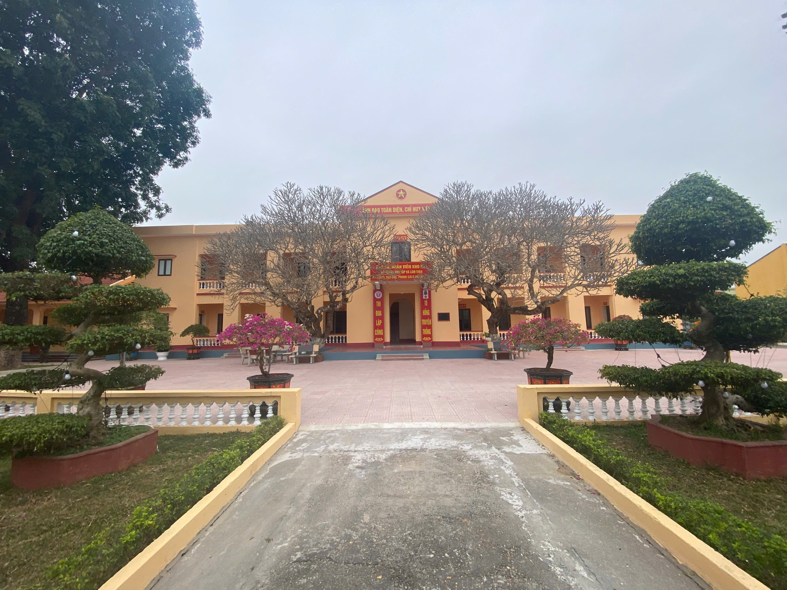
Kho K23 (tiền thân là Trung đoàn xe tăng 407 và Kho K22 B) được thành lập ngày 08/11/1990, đóng quân trên địa bàn xã Ngọc Sơn, huyện Hiệp Hòa, tỉnh Bắc Giang cũ (nay thuộc xã Hoàng Vân, tỉnh Bắc Ninh), có tổng diện tích trên 33ha.
Đoàn kết – Năng động – Sáng tạo – Tự lực – Tự cường

Kho K23 (tiền thân là Trung đoàn xe tăng 407 và Kho K22 B) được thành lập ngày 08/11/1990, đóng quân trên địa bàn xã Ngọc Sơn, huyện Hiệp Hòa, tỉnh Bắc Giang cũ (nay thuộc xã Hoàng Vân, tỉnh Bắc Ninh), có tổng diện tích trên 33ha.
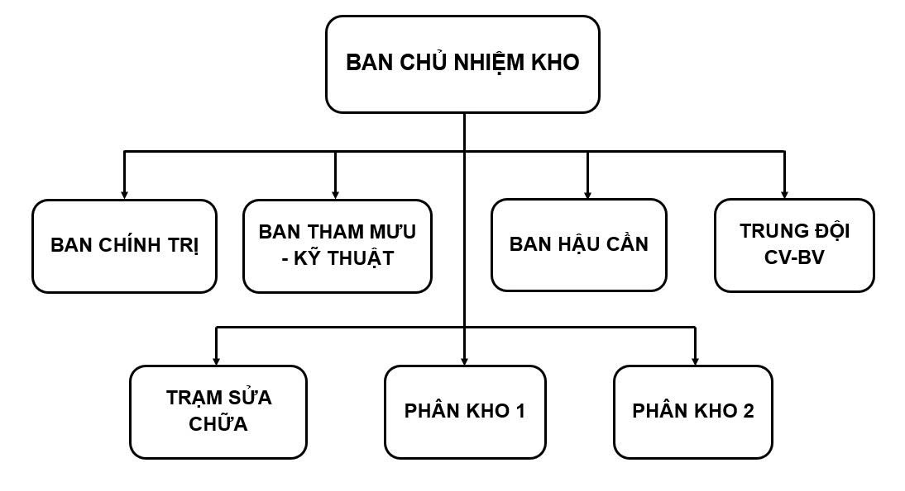
Hiện nay Kho K23 là đơn vị tương đương cấp Trung đoàn trực thuộc Cục Hậu Cần-Kỹ thuật/QK1, được biên chế gồm: Ban Chủ nhiệm kho; 3 cơ quan (Ban Tham mưu - Kỹ thuật, Ban Chính trị, Ban Hậu cần); 2 Phân kho (Phân kho 1, Phân kho 2); Trạm Bảo dưỡng sửa chữa và Trung đội Cảnh vệ - Bảo vệ. Quân số đơn vị gần 200 cán bộ, nhân viên.
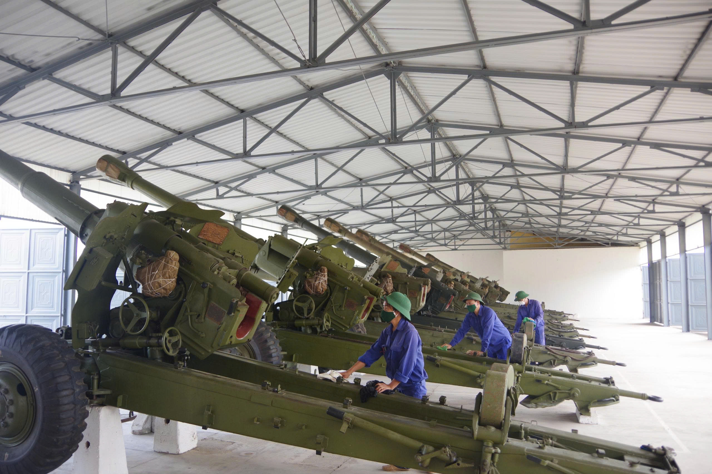
Trải qua hơn 35 năm xây dựng và trưởng thành, CBNV Kho K23 luôn đoàn kết quyết tâm cao, vượt qua mọi khó khăn thử thách, phấn đấu vươn lên hoàn thành xuất sắc mọi nhiệm vụ được giao, bảo đảm kho trạm an toàn tuyệt đối. Hàng năm Kho đều hoàn thành đạt và vượt chỉ tiêu nhiệm vụ chính trị trung tâm, đó là quản lý, bảo quản, bảo dưỡng, sửa chữa, niêm cất, tiếp nhận, cấp phát VKTBKT theo mệnh lệnh, phục vụ các đơn vị trong LLVT/QK trong công tác SSCĐ, huấn luyện và các nhiệm vụ thường xuyên cũng như đột xuất khác.
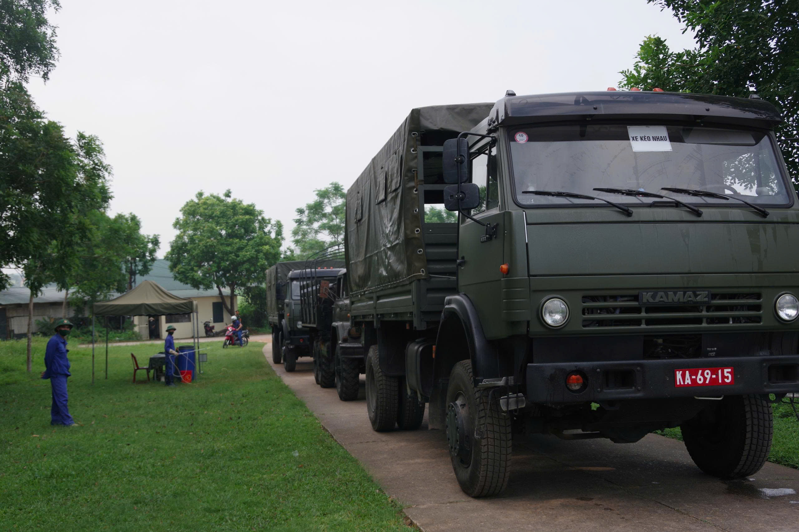
Tính đến nay, Kho đã tiến hành BQ, BD, SC, NC được hàng chục nghìn lượt xe ô tô, hàng trăm nghìn khẩu súng pháo các loại, hàng nghìn tấn vật tư đồng bộ; tiến hành thanh xử lý, dồn dịch, điều chuyển các loại xe ô tô, súng pháo bảo đảm an toàn tuyệt đối.
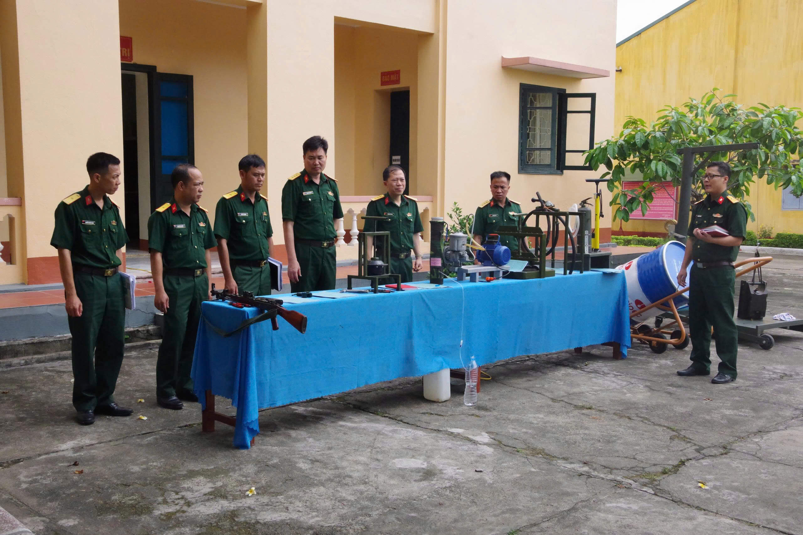
Trong công tác Kỹ thuật, phong trào phát huy sáng kiến cải tiến KT của đơn vị đạt được nhiều thành tích nổi bật, trong đó có 02 sáng kiến được cấp Bằng Tuổi trẻ sáng tạo cấp toàn quân và 03 sáng kiến được Quân khu công nhận cùng nhiều sáng kiến có giá trị trên các mặt công tác được công nhận ở cấp Cục.
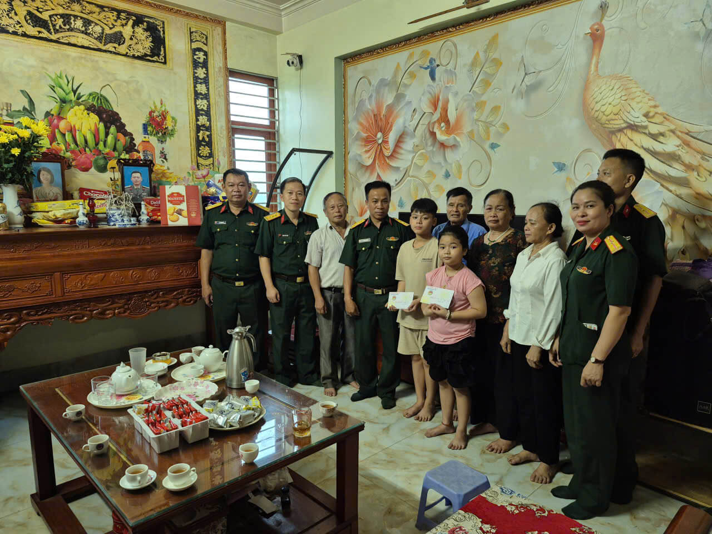
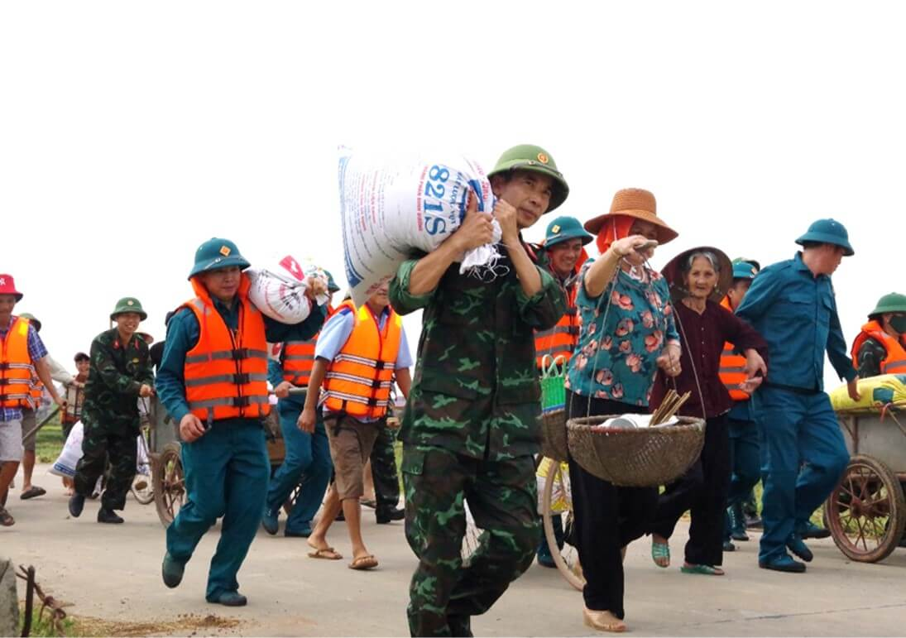
Cùng với việc triển khai thực hiện thắng lợi nhiệm vụ chính trị, đơn vị đã luôn thực hiện tốt công tác “Đền ơn đáp nghĩa”, thăm hỏi tặng quà gia đình chính sách, gia đình có hoàn cảnh khó khăn nhân kỷ niệm ngày Thương binh liệt sĩ (27/7) và dịp lễ tết hằng năm trị giá hàng chục triệu đồng; tham gia tích cực, có hiệu quả các cuộc vận động, các phong trào thi đua yêu nước của các cấp, các ngành, địa phương phát động như: “Kho K23 chung tay vì người nghèo - không để ai bị bỏ lại phía sau”; phong trào thi đua “Dân vận khéo”, “Đơn vị dân vận tốt”; “Xóa nhà tạm, nhà dột nát năm 2025”; Phát huy tinh thần “Vì nhân dân phục vụ” cán bộ, nhân viên Kho K23, đã nhanh chóng huy động 50 cán bộ, nhân viên phối hợp cùng lực lượng Công an, dân quân địa phương cùng bà con nhân dân xã Hoàng Vân, tỉnh Bắc Ninh, khắc phục hậu quả mưa lũ do ảnh hưởng của hoàn lưu bão số 11...., tô thắm hình ảnh cao đẹp “Bộ đội Cụ Hồ” trong lòng nhân dân được cấp ủy chính quyền địa phương và nhân dân đánh giá cao.
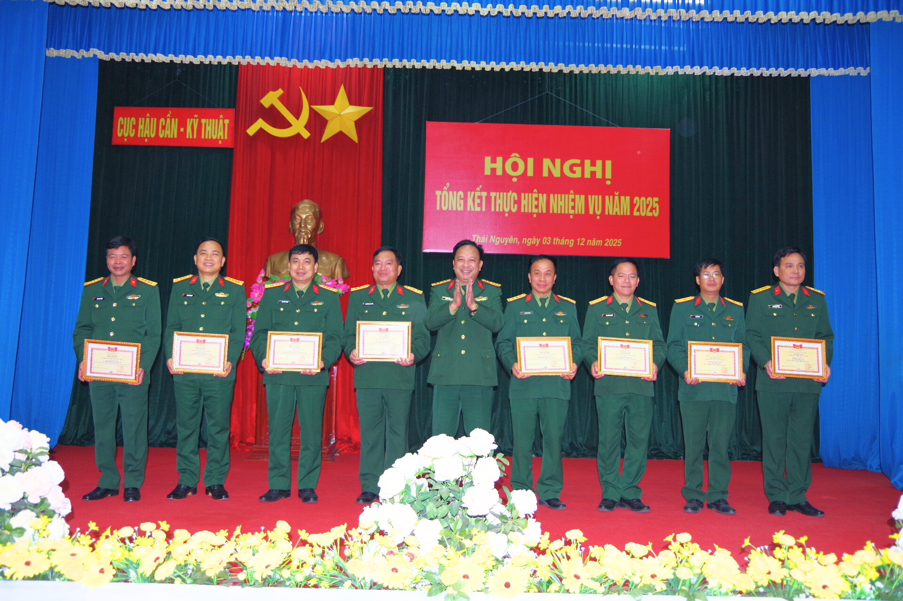
Những kết quả trên đã đóng góp tích cực vào kết quả hoàn thành nhiệm vụ chung, góp phần xây dựng Đảng bộ Kho hoàn thành xuất sắc nhiệm vụ, đơn vị VMTD “Mẫu mực tiêu biểu”. Qua hơn 35 xây dựng và trưởng thành, các thế hệ CBCS Kho K23 đã xây đắp nên truyền thống “Đoàn kết, năng động, sáng tạo, tự lực, tự cường”. Kho K23 luôn là một trong các đơn vị dẫn đầu phong trào thi đua quyết thắng của Cục HC-KT.
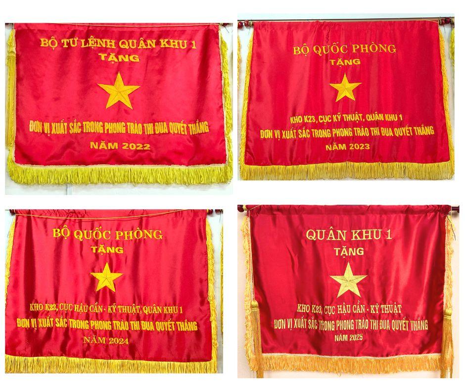
Ghi nhận những kết quả và thành tích đạt được của Kho K23 trong hơn 35 qua, Đảng, Nhà nước, Quân đội và Thủ trưởng BTL/QK đã tặng thưởng cho đơn vị nhiều phần thưởng cao quý, hàng trăm lượt tập thể, hàng nghìn lượt cá nhân được khen thưởng vì có thành tích xuất sắc trong thực hiện nhiệm vụ. Tính từ năm 2020 đến nay, Kho được Chủ tịch nước tặng thưởng Huân chương BVTQ hạng Ba (2020), Bộ Quốc phòng tặng Cờ (2023, 2024), BTL/QK tặng Cờ (2022, 2025) cho đơn vị dẫn đầu phong trào thi đua Quyết thắng trong năm.
Đạt được những kết quả thành tích trên đây, trước hết đơn vị luôn nhận được sự quan tâm lãnh đạo, chỉ đạo trực tiếp của Thường vụ Đảng ủy, Thủ trưởng Cục HC-KT và các phòng ban cơ quan Cục. Đặc biệt là sự phối hợp giúp đỡ của các cơ quan, đơn vị bạn, của các cấp ủy Đảng, chính quyền, nhà trường kết nghĩa và Nhân dân trên địa bàn đóng quân, xây dựng Đảng bộ hoàn thành xuất sắc nhiệm vụ, đơn vị vững mạnh toàn diện “mẫu mực tiêu tiểu”, đáp ứng yêu cầu nhiệm vụ trong tình hình mới./.
Đại hội I (1935) – Thời gian: 27–31/3/1935; Địa điểm: Ma Cao (Trung Quốc); Tổng Bí thư: Lê Hồng Phong; Nội dung: Khôi phục hệ thống tổ chức Đảng, củng cố phong trào cách mạng, xác định nhiệm vụ chống đế quốc và phong kiến.
Đại hội II (1951) – Thời gian: 11–19/2/1951; Địa điểm: Chiêm Hóa (Tuyên Quang); Tổng Bí thư: Trường Chinh; Nội dung: Đảng hoạt động công khai với tên Đảng Lao động Việt Nam, đề ra đường lối kháng chiến toàn dân, toàn diện chống thực dân Pháp.
Đại hội III (1960) – Thời gian: 5–10/9/1960; Địa điểm: Hà Nội; Tổng Bí thư: Lê Duẩn; Nội dung: Xác định hai nhiệm vụ chiến lược là xây dựng CNXH ở miền Bắc và đấu tranh giải phóng miền Nam.
Đại hội IV (1976) – Thời gian: 14–20/12/1976; Địa điểm: Hà Nội; Tổng Bí thư: Lê Duẩn; Nội dung: Đại hội đầu tiên sau thống nhất đất nước, đổi tên thành Đảng Cộng sản Việt Nam, đề ra đường lối xây dựng CNXH trên phạm vi cả nước.
Đại hội V (1982) – Thời gian: 27–31/3/1982; Địa điểm: Hà Nội; Tổng Bí thư: Lê Duẩn; Nội dung: Tiếp tục đường lối xây dựng CNXH, bước đầu nhận diện hạn chế của cơ chế quản lý tập trung bao cấp.
Đại hội VI (1986) – Thời gian: 15–18/12/1986; Địa điểm: Hà Nội; Tổng Bí thư: Nguyễn Văn Linh; Nội dung: Khởi xướng đường lối đổi mới toàn diện, chuyển sang kinh tế thị trường định hướng xã hội chủ nghĩa.
Đại hội VII (1991) – Thời gian: 24–27/6/1991; Địa điểm: Hà Nội; Tổng Bí thư: Đỗ Mười; Nội dung: Thông qua Cương lĩnh xây dựng đất nước trong thời kỳ quá độ lên CNXH, khẳng định con đường đi lên CNXH.
Đại hội VIII (1996) – Thời gian: 28/6 – 1/7/1996; Địa điểm: Hà Nội; Tổng Bí thư: Đỗ Mười; Nội dung: Đẩy mạnh công nghiệp hóa, hiện đại hóa, đưa đất nước ra khỏi tình trạng kém phát triển.
Đại hội IX (2001) – Thời gian: 19–22/4/2001; Địa điểm: Hà Nội; Tổng Bí thư: Nông Đức Mạnh; Nội dung: Phát triển kinh tế thị trường định hướng XHCN, chủ động hội nhập kinh tế quốc tế.
Đại hội X (2006) – Thời gian: 18–25/4/2006; Địa điểm: Hà Nội; Tổng Bí thư: Nông Đức Mạnh; Nội dung: Đẩy mạnh toàn diện công cuộc đổi mới, nâng cao năng lực lãnh đạo của Đảng, hội nhập WTO.
Đại hội XI (2011) – Thời gian: 12–19/1/2011; Địa điểm: Hà Nội; Tổng Bí thư: Nguyễn Phú Trọng; Nội dung: Thông qua Cương lĩnh bổ sung, phát triển năm 2011, xác định ba đột phá chiến lược.
Đại hội XII (2016) – Thời gian: 20–28/1/2016; Địa điểm: Hà Nội; Tổng Bí thư: Nguyễn Phú Trọng; Nội dung: Tăng cường xây dựng, chỉnh đốn Đảng, đẩy mạnh phòng chống tham nhũng, phát triển bền vững.
Đại hội XIII (2021) – Thời gian: 25/1 – 1/2/2021; Địa điểm: Hà Nội; Tổng Bí thư: Nguyễn Phú Trọng; Nội dung: Khơi dậy khát vọng phát triển đất nước, mục tiêu đến 2030 và tầm nhìn 2045.
Đại hội XIV (2026) – Thời gian: 19–23/1/2026; Địa điểm: Hà Nội; Tổng Bí thư: Tô Lâm; Nội dung: Tổng kết hơn 40 năm đổi mới, xác định mục tiêu phát triển nhanh và bền vững giai đoạn 2026–2030, tầm nhìn 2045.
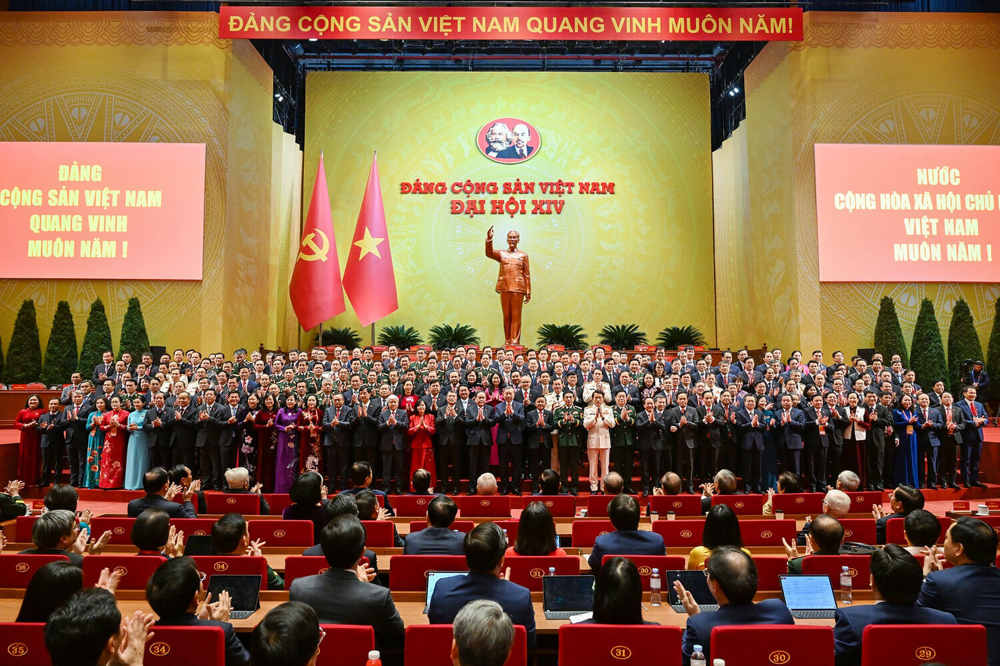
Đại hội đại biểu toàn quốc lần thứ XIV của Đảng Cộng sản Việt Nam được tổ chức tại Thủ đô Hà Nội từ ngày 19 đến ngày 23 tháng 01 năm 2026, với 1.586 đại biểu đại diện cho hơn 5,6 triệu đảng viên trong cả nước.
Chủ đề của Đại hội là: “Đoàn kết – Dân chủ – Kỷ cương – Đột phá – Phát triển”, thể hiện quyết tâm chính trị cao của toàn Đảng, toàn dân và toàn quân trong giai đoạn phát triển mới của đất nước.
Đại hội diễn ra trong không khí nghiêm túc, dân chủ, đoàn kết, kỷ cương; hoàn thành toàn bộ nội dung, chương trình đề ra và được đánh giá là thành công tốt đẹp.
Đại hội đã thông qua Nghị quyết Đại hội XIV, đánh giá kết quả thực hiện Nghị quyết Đại hội XIII; tổng kết lý luận và thực tiễn hơn 40 năm công cuộc đổi mới và 15 năm thi hành Điều lệ Đảng.
Nghị quyết Đại hội xác định mục tiêu phát triển đất nước đến năm 2030 trở thành nước đang phát triển có công nghiệp hiện đại, thu nhập trung bình cao; tầm nhìn đến năm 2045 trở thành nước phát triển, thu nhập cao theo định hướng xã hội chủ nghĩa.
Đại hội đề ra các mục tiêu kinh tế – xã hội chủ yếu giai đoạn 2026–2030, trong đó xác định tốc độ tăng trưởng GDP bình quân đạt từ 10%/năm trở lên; GDP bình quân đầu người đạt khoảng 8.500 USD vào năm 2030.
Kinh tế số được xác định là động lực quan trọng, phấn đấu đóng góp khoảng 30% GDP; năng suất lao động xã hội tăng bình quân khoảng 8,5%/năm.
Về lĩnh vực xã hội, Đại hội đặt mục tiêu nâng cao chỉ số phát triển con người (HDI) đạt khoảng 0,8; tuổi thọ trung bình khoảng 75,5 tuổi; tiếp tục giảm nghèo đa chiều bền vững từ 1–1,5%/năm.
Đại hội xác định tiếp tục thực hiện ba đột phá chiến lược, trong đó nhấn mạnh đổi mới thể chế và tổ chức bộ máy tinh gọn, hiệu lực, hiệu quả; phát triển nguồn nhân lực chất lượng cao; xây dựng hệ thống kết cấu hạ tầng đồng bộ, hiện đại.
Đại hội tiến hành bầu Ban Chấp hành Trung ương Đảng khóa XIV; Ban Chấp hành Trung ương khóa XIV đã bầu 19 ủy viên Bộ Chính trị, Ban Bí thư và Ủy ban Kiểm tra Trung ương khóa XIV.
Đồng chí Tô Lâm được Ban Chấp hành Trung ương khóa XIV tín nhiệm bầu giữ chức Tổng Bí thư Ban Chấp hành Trung ương Đảng Cộng sản Việt Nam nhiệm kỳ 2026–2031.
Đại hội tiếp tục nhấn mạnh nhiệm vụ xây dựng, chỉnh đốn Đảng và hệ thống chính trị trong sạch, vững mạnh; tăng cường kỷ luật, kỷ cương, đạo đức công vụ gắn với phòng, chống tham nhũng, lãng phí, tiêu cực.
Đại hội khẳng định vai trò lãnh đạo toàn diện, tuyệt đối của Đảng đối với Nhà nước và xã hội; giữ vững độc lập, chủ quyền, thống nhất và toàn vẹn lãnh thổ trong mọi tình huống.
Đường lối đối ngoại tiếp tục được xác định là độc lập, tự chủ, hòa bình, hợp tác và phát triển; đa phương hóa, đa dạng hóa quan hệ đối ngoại, chủ động và tích cực hội nhập quốc tế toàn diện, sâu rộng.
Đại hội nhấn mạnh yêu cầu thúc đẩy đổi mới sáng tạo, phát triển khoa học – công nghệ, chuyển đổi số quốc gia, nâng cao năng lực cạnh tranh của nền kinh tế và vị thế quốc gia trong bối cảnh quốc tế mới.
Trong dòng chảy dư âm Đại hội XIV của Đảng, bài viết “Tiến lên! Toàn thắng ắt về ta!” của Tổng Bí thư Tô Lâm mang ý nghĩa đặc biệt: Không chỉ khẳng định thành công của Đại hội, mà quan trọng hơn, chuyển khí thế chính trị thành kỷ luật thực thi của cả hệ thống.
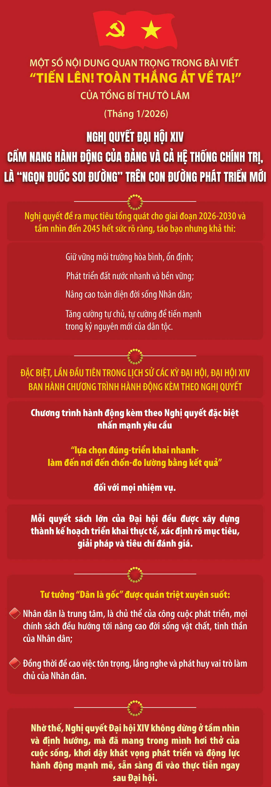
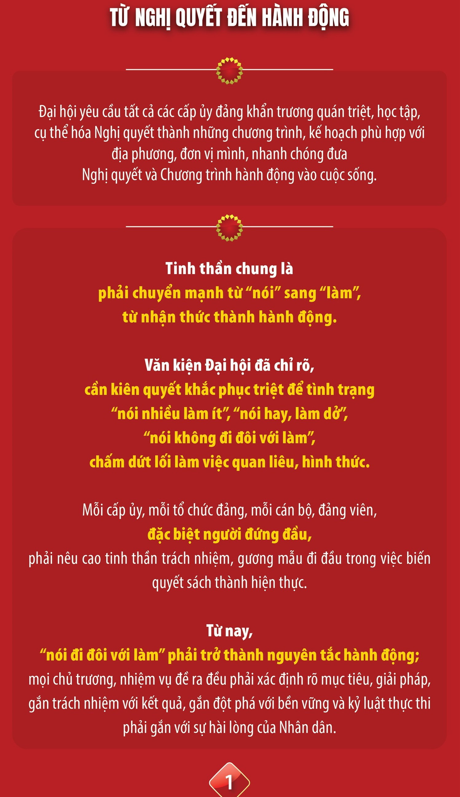
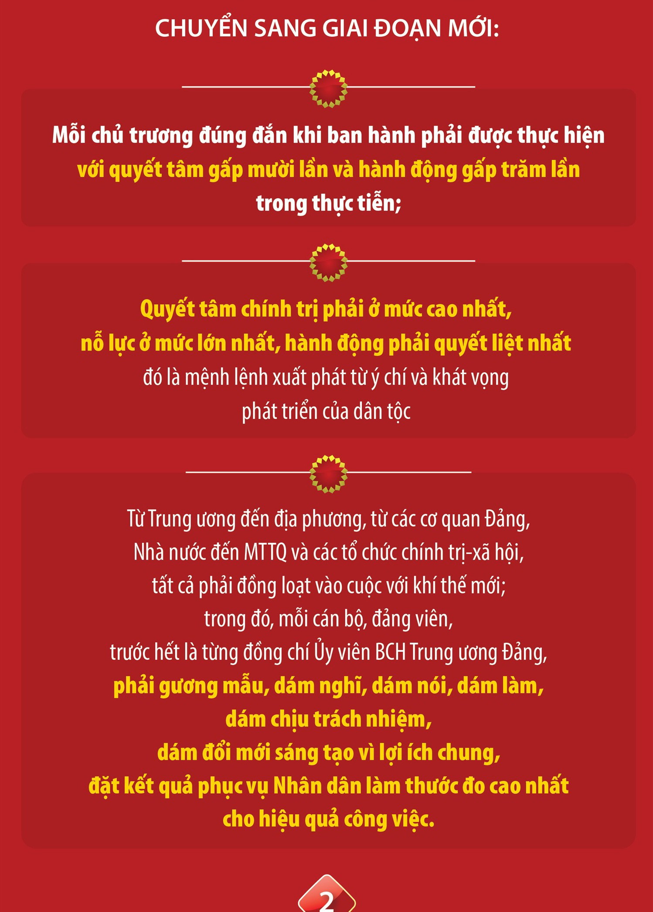
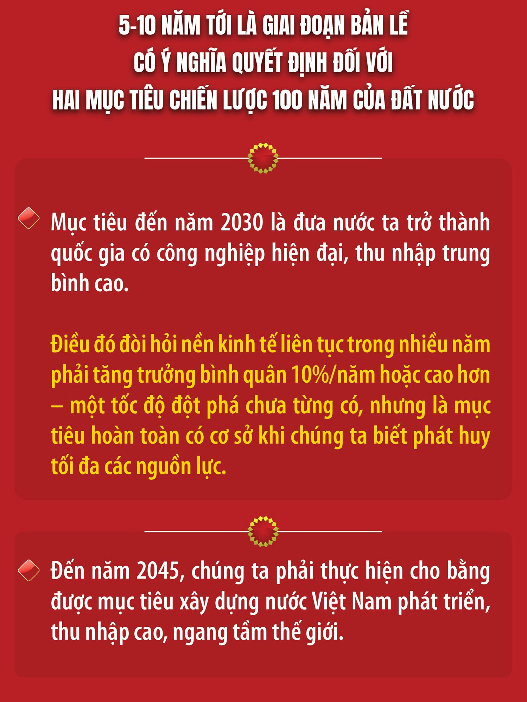
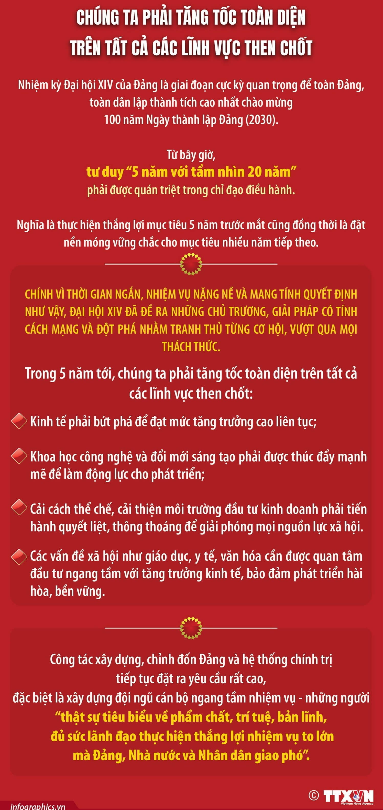

Ngày 29-1, Bộ Chỉ huy quân sự tỉnh Bắc Ninh tổ chức đón các hạ sĩ quan, binh sĩ hoàn thành nghĩa vụ trở về địa phương tại 9 địa điểm trong toàn tỉnh.
Đại tá Trần Viết Năng, Chính ủy Bộ Chỉ huy quân sự tỉnh Bắc Ninh dự lễ đón các hạ sĩ quan, binh sĩ tại Ban Chỉ huy phòng thủ khu vực 4.
Được biết, các hạ sĩ quan, binh sĩ thực hiện nghĩa vụ quân sự tại các cơ quan, đơn vị trực thuộc Bộ Tổng Tham mưu, Bộ tư lệnh Lăng Chủ tịch Hồ Chí Minh, Quân khu 1, Quân đoàn 12, Quân chủng phòng không - Không quân, Tổng cục Hậu cần - Kỹ thuật, Binh chủng Đặc công…
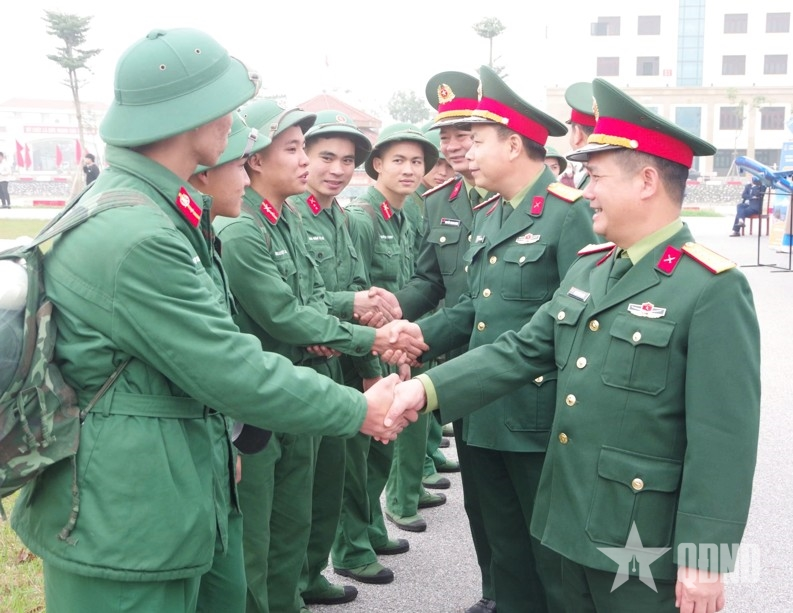
Bộ Chỉ huy quân sự tỉnh Bắc Ninh đã tổ chức lễ đón tại 9 địa điểm gồm: Ban Chỉ huy phòng thủ khu vực 1, 2, 4; Ban Chỉ huy quân sự huyện Sơn Động (cũ), Ban Chỉ huy quân sự huyện Lục Nam (cũ), Hội trường UBND phường Yên Dũng, Hội trường UBND xã Cao Thượng, Ban Chỉ huy quân sự huyện Hiệp Hòa (cũ), Ban Chỉ huy quân sự thị xã Việt Yên (cũ).
Tại các địa điểm trên, đại diện Bộ Chỉ huy quân sự tỉnh Bắc Ninh đã thông báo nhanh về kết quả tình hình kinh tế - xã hội, an ninh trật tự tại địa phương tới các hạ sĩ quan, binh sĩ hoàn thành nghĩa vụ quân sự trở về địa phương.
Phát biểu chúc mừng, Đại tá Trần Viết Năng nhấn mạnh, sau 2 năm rèn luyện trong môi trường Quân đội - mái trường lớn của cách mạng, các hạ sĩ quan, binh sĩ đã được rèn luyện bản lĩnh chính trị vững vàng, phẩm chất Bộ đội Cụ Hồ trong thời kỳ mới. Nhiều đồng chí đã hoàn thành tốt và xuất sắc nhiệm vụ, được khen thưởng, kết nạp vào Đảng Cộng sản Việt Nam, trở thành những hạt nhân tiêu biểu của Đảng. Những kết quả đó là niềm tự hào của gia đình, quê hương và là minh chứng cho truyền thống cách mạng, yêu nước của tuổi trẻ tỉnh Bắc Ninh.
Đồng chí Chính ủy Bộ Chỉ huy quân sự tỉnh Bắc Ninh mong rằng, thời gian tới, khi trở về sinh sống, lao động và học tập tại địa phương, các hạ sĩ quan, binh sĩ tiếp tục phát huy phẩm chất tốt đẹp của người quân nhân cách mạng; vận dụng kiến thức, kỹ năng được rèn luyện vào trong đời sống và công việc, tích cực tham gia phát triển kinh tế - xã hội, giữ gìn an ninh trật tự, sẵn sàng tham gia lực lượng dự bị động viên, góp phần xây dựng nền quốc phòng toàn dân vững mạnh. Đồng thời, hăng hái tham gia các phong trào thi đua yêu nước, góp phần cùng Đảng bộ, chính quyền và nhân dân trong tỉnh thực hiện thắng lợi các mục tiêu phát triển trong giai đoạn mới.
Đại tá Trần Viết Năng cũng đề nghị cấp ủy Đảng, chính quyền, Ủy ban MTTQ và các ban, ngành đoàn thể địa phương tiếp tục quan tâm, tạo điều kiện hỗ trợ các đồng chí quân nhân xuất ngũ, đặc biệt trong phát triển kinh tế, ổn định cuộc sống.
Sáng ngày 02 tháng 02 năm 2026, Kho K23 tổ chức Hội nghị Thông báo nhanh kết quả Đại hội đại biểu toàn quốc lần thứ XIV của Đảng. Đồng chí Thượng tá Đoàn Ngọc Tú, Bí thư Đảng ủy, Chính trị viên Kho, chủ trì hội nghị. Dự hội nghị có các đồng chí trong Đảng ủy, chỉ huy Kho; chỉ huy các cơ quan, đơn vị và đông đủ cán bộ, nhân viên.
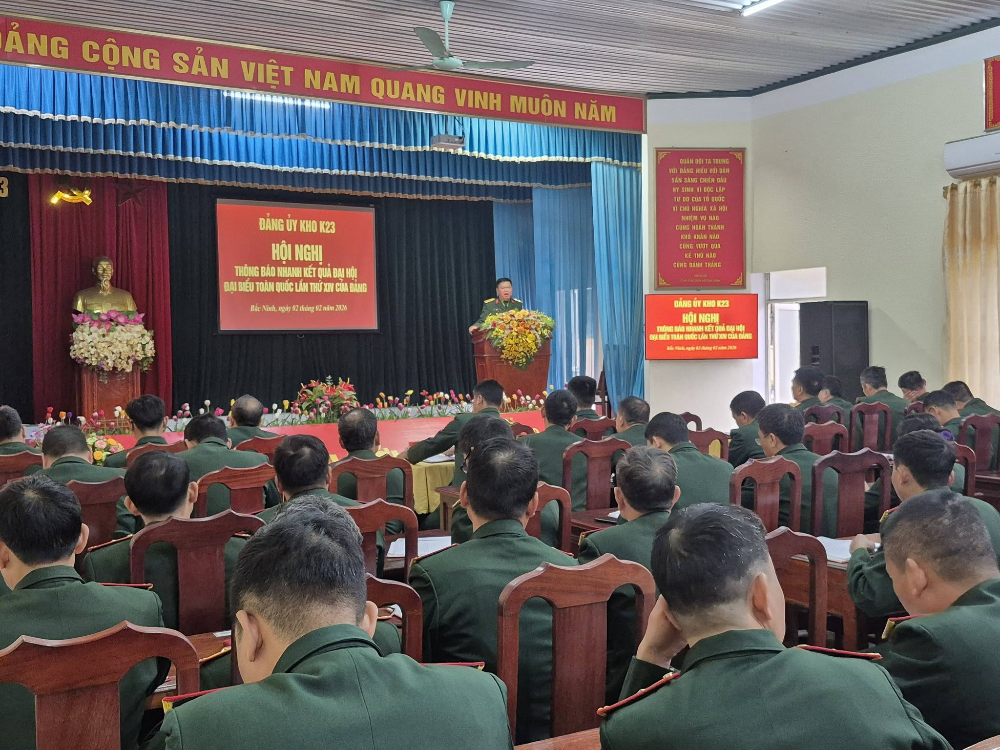
Tại hội nghị, đồng chí Bí thư Đảng ủy đã thông báo nhấn mạnh, làm rõ những nội dung cốt lõi và những quyết sách quan trọng tại Đại hội XIV của Đảng, làm rõ công tác chuẩn bị văn kiện, nhân sự, đại biểu dự Đại hội; đồng thời nhấn mạnh bối cảnh, ý nghĩa, chủ đề, phương châm Đại hội; những thành tựu nổi bật sau 40 năm đổi mới; quan điểm chỉ đạo, mục tiêu tổng quát, các đột phá chiến lược và định hướng lớn về phát triển kinh tế - xã hội, quốc phòng, an ninh, đối ngoại trong thời gian tới. Đồng chí đã thông tin những nội dung mới, điểm nhấn quan trọng liên quan trực tiếp đến nhiệm vụ xây dựng Quân đội nhân dân Việt Nam cách mạng, chính quy, tinh nhuệ, hiện đại, kết quả bầu Ban Chấp hành Trung ương Đảng khóa XIV và các chức danh lãnh đạo chủ chốt của Đảng, Nhà nước.
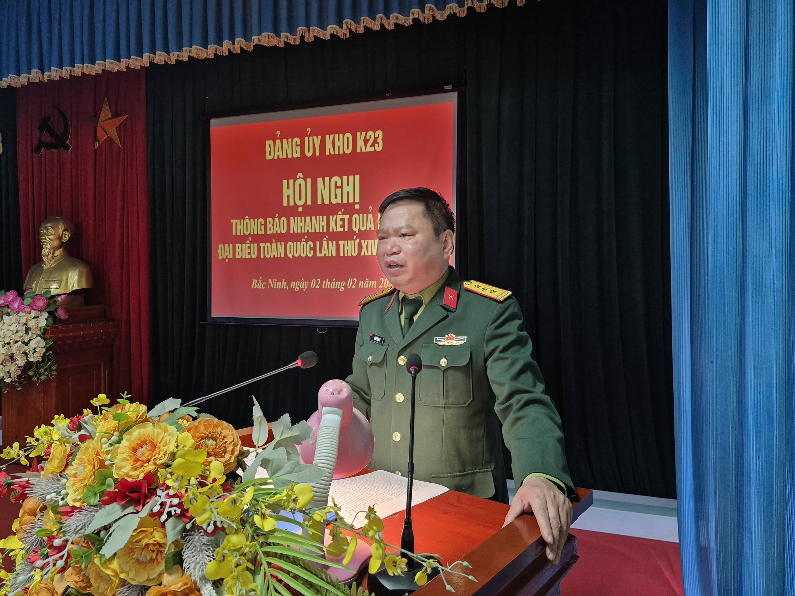
Thông qua Hội nghị, Đảng ủy Kho yêu cầu cấp ủy, chỉ huy các cơ quan, đơn vị tiếp tục quán triệt sâu sắc kết quả Đại hội XIV của Đảng; tổ chức học tập, tuyên truyền, phổ biến rộng rãi đến cán bộ, nhân viên, bảo đảm thống nhất nhận thức, tư tưởng và hành động. Trên cơ sở đó, cụ thể hóa các mục tiêu, nhiệm vụ, giải pháp của Đại hội vào chương trình, kế hoạch công tác của cơ quan, đơn vị; gắn việc học tập, quán triệt với thực hiện thắng lợi nhiệm vụ chính trị, xây dựng Đảng bộ Kho HTXSNV, đơn vị vững mạnh toàn diện “Mẫu mực, tiêu biểu”.
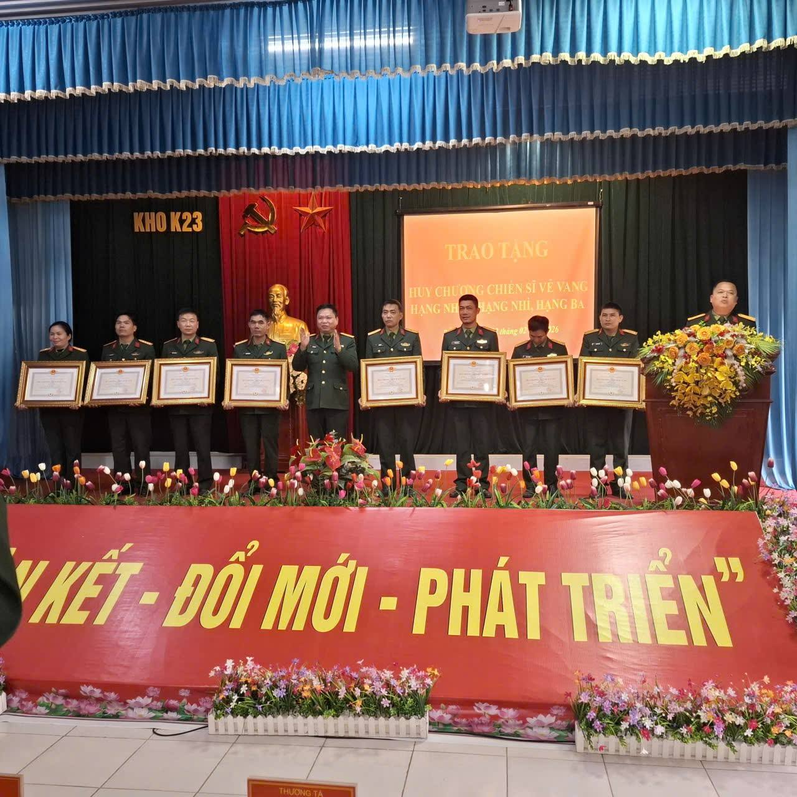
Cùng ngày Kho đã tổ công bố quyết định của Chủ tịch nước và trao tặng cho 49 đồng chí được tặng thưởng Huy chương chiến sĩ vẻ vang hạng Nhất, hạng Nhì, hạng Ba đã có quá trình công tác trong lực lượng Quân đội nhân dân, góp phần xây dựng Quân đội, củng cố quốc phòng và bảo vệ Tổ quốc./.
Nhân dịp Tết Nguyên đán Bính Ngọ 2026, chiều ngày 5/2, Trung tướng Trương Mạnh Dũng, Tư lệnh Quân khu đến thăm, chúc Tết cán bộ, nhân viên Kho K23. Tham gia cùng đoàn có Đại tá Trần Huy Tưởng, Chủ nhiệm Hậu cần-Kỹ thuật Quân khu; Thủ trưởng Văn phòng Bộ Tư lệnh Quân khu. Đón tiếp đoàn công tác có các đồng chí trong Đảng ủy, chỉ huy Kho; chỉ huy các cơ quan, đơn vị.
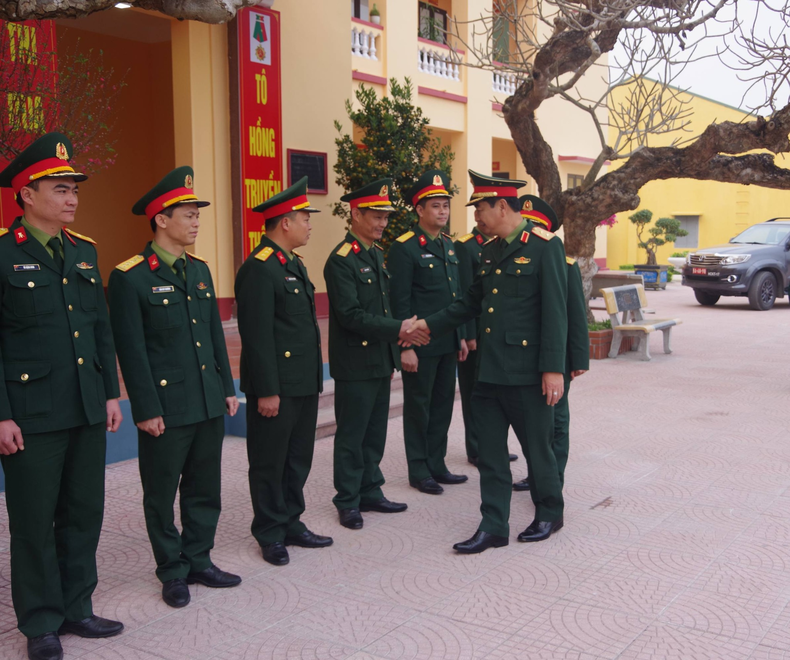
Tại buổi thăm, chúc Tết, Đồng chí Tư lệnh Quân khu đã nghe chỉ huy Kho báo cáo khái quát kết quả thực hiện nhiệm vụ năm 2025 và công tác chuẩn bị đón Tết Nguyên đán Bính Ngọ. Đồng chí Tư lệnh Quân khu ghi nhận, biểu dương những kết quả, thành tích mà cán bộ, nhân viên Kho K23 đã đạt được trong năm qua; đánh giá cao tinh thần trách nhiệm của đơn vị trong tổ chức quán triệt, triển khai các chỉ thị, mệnh lệnh về sẵn sàng chiến đấu, bảo đảm cho bộ đội đón Tết vui tươi, lành mạnh, an toàn, tiết kiệm.
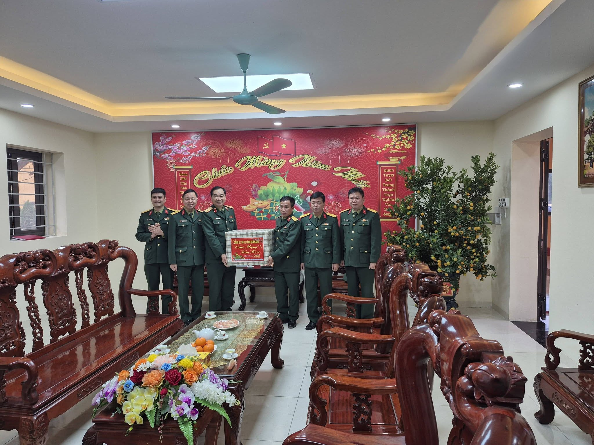
Nhân dịp năm mới, đồng chí Tư lệnh Quân khu gửi lời chúc mừng năm mới tốt đẹp nhất tới toàn thể cán bộ, nhân viên Kho K23; đơn vị tiếp tục phát huy truyền thống đoàn kết, chủ động khắc phục khó khăn; duy trì nghiêm chế độ trực sẵn sàng chiến đấu, nắm chắc tình hình địa bàn, bảo đảm an toàn tuyệt đối về mọi mặt, hoàn thành tốt các nhiệm vụ được giao ngay từ những ngày đầu, tháng đầu của năm 2026.
Trong những năm qua, phong trào Thi đua Quyết thắng ở Kho K23, Cục Hậu cần - Kỹ thuật luôn được triển khai toàn diện, đồng bộ, gắn chặt với nhiệm vụ chính trị trung tâm và các khâu đột phá của đơn vị. Bằng tinh thần chủ động, sáng tạo, đoàn kết và kỷ cương, Kho K23 đã liên tục hoàn thành xuất sắc nhiệm vụ, trở thành điểm sáng tiêu biểu, nhiều năm liền dẫn đầu phong trào Thi đua Quyết thắng trong Cục Hậu cần - Kỹ thuật.
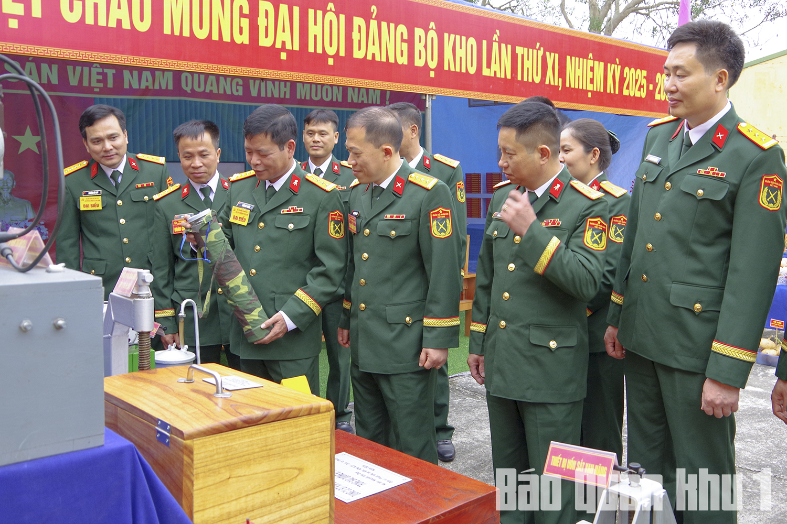
Nhiệm vụ chính trị trọng tâm của Kho là: Cất giữ, quản lý, bảo quản, bảo dưỡng, sửa chữa, niêm cất và tiếp nhận, cấp phát trang bị kỹ thuật (TBKT) cho các đơn vị trong LLVT Quân khu theo mệnh lệnh của cấp trên. Quá trình thực hiện nhiệm vụ luôn được sự quan tâm lãnh đạo, chỉ đạo trực tiếp của Thường vụ Đảng ủy, Thủ trưởng Cục Hậu cần-Kỹ thuật và cơ quan nghiệp vụ cấp trên. Thường xuyên duy trì tốt tình trạng kỹ thuật TBKT bảo đảm cho các đơn vị trong LLVT Quân khu và bảo đảm kỹ thuật kho tàng. Bên cạnh đó thực hiện tốt nhiệm vụ huấn luyện, SSCĐ, tuần tra canh gác bảo đảm an toàn tuyệt đối kho, trạm. Xây dựng Đảng bộ hoàn thành xuất sắc nhiệm vụ, đơn vị VMTD “mẫu mực, tiêu biểu”.
Trên cơ sở quán triệt sâu sắc Nghị quyết Đảng ủy Cục Hậu cần- Kỹ thuật và phong trào Thi đua Quyết thắng của Quân khu, Đảng ủy, chỉ huy Kho K23 đã lãnh đạo, chỉ đạo tổ chức phong trào thi đua với nhiều nội dung, hình thức phong phú, sát thực tiễn nhiệm vụ. Các mục tiêu thi đua được xác định rõ ràng, cụ thể, tập trung vào những nhiệm vụ trọng tâm, khâu yếu, việc khó, tạo sự chuyển biến vững chắc trong toàn đơn vị.
Nổi bật là: Kho K23 đã gắn phong trào Thi đua Quyết thắng với việc thực hiện Nghị quyết Trung ương 4 (khóa XII, XIII) về xây dựng, chỉnh đốn Đảng; Chỉ thị 05 của Bộ Chính trị và các cuộc vận động lớn của Quân đội như “Quản lý, khai thác vũ khí trang bị kỹ thuật tốt, bền, an toàn, tiết kiệm và an toàn giao thông”, “Ngành Hậu cần Quân đội làm theo lời Bác Hồ dạy”. Qua đó, phong trào thi đua không chỉ lan tỏa mạnh mẽ mà còn đi vào chiều sâu, thực chất, trở thành động lực thúc đẩy cán bộ, nhân viên, chiến sĩ phấn đấu vươn lên.
Trong thực hiện nhiệm vụ chuyên môn, Kho K23 luôn duy trì nghiêm nền nếp chính quy kho tàng, bảo đảm an toàn tuyệt đối về người, vũ khí trang bị, vật chất và doanh trại. Công tác quản lý, bảo quản, sắp xếp, cấp phát vật chất hậu cần - kỹ thuật được thực hiện khoa học, chặt chẽ, đúng quy định. Nhiều năm liền, đơn vị không để xảy ra cháy nổ, mất mát, hư hỏng vật chất, hoàn thành tốt và xuất sắc các nhiệm vụ bảo đảm cho huấn luyện, sẵn sàng chiến đấu và các nhiệm vụ đột xuất của Quân khu.
Phong trào thi đua còn tạo động lực mạnh mẽ để Kho K23 đẩy mạnh nghiên cứu, phát huy sáng kiến, cải tiến kỹ thuật. Nhiều sáng kiến, mô hình mới được áp dụng hiệu quả trong quản lý kho, bảo quản vật chất, cải tạo doanh trại, góp phần tiết kiệm ngân sách, công sức bộ đội, nâng cao hiệu quả công tác. Việc ứng dụng công nghệ thông tin trong quản lý, theo dõi vật chất ngày càng được chú trọng, giúp nâng cao tính chính xác, kịp thời và minh bạch.
Bên cạnh đó, Kho K23 đặc biệt coi trọng công tác xây dựng đơn vị vững mạnh về chính trị. Đảng ủy đơn vị thường xuyên quan tâm lãnh đạo công tác giáo dục chính trị tư tưởng, quản lý chặt chẽ tình hình tư tưởng cán bộ, chiến sĩ, kịp thời nắm bắt và giải quyết những vấn đề phát sinh. Phong trào Thi đua Quyết thắng được triển khai gắn với xây dựng môi trường văn hóa lành mạnh, dân chủ, đoàn kết, thống nhất; phát huy vai trò nêu gương của cán bộ, đảng viên, nhất là đội ngũ cán bộ chủ trì các phân kho, đơn vị.
Công tác huấn luyện, bồi dưỡng nâng cao trình độ chuyên môn nghiệp vụ cho đội ngũ cán bộ, nhân viên kỹ thuật cũng được đơn vị xác định là nội dung thi đua trọng tâm. Kho K23 thường xuyên tổ chức tập huấn, kiểm tra, hội thi, hội thao nhằm nâng cao tay nghề, trình độ quản lý kho tàng, bảo quản vật chất cho cán bộ, nhân viên. Qua đó, chất lượng đội ngũ ngày càng được nâng lên, đáp ứng tốt yêu cầu nhiệm vụ trong tình hình mới.
Phong trào Thi đua Quyết thắng ở Kho K23 còn thể hiện rõ nét qua việc chăm lo đời sống vật chất, tinh thần cho bộ đội. Đơn vị tích cực tăng gia sản xuất, cải thiện bữa ăn, xây dựng cảnh quan môi trường sáng, xanh, sạch, đẹp; tổ chức tốt các hoạt động văn hóa, văn nghệ, thể dục, thể thao, tạo không khí thi đua sôi nổi, gắn bó trong đơn vị. Đây chính là nền tảng quan trọng để cán bộ, chiến sĩ yên tâm công tác, gắn bó lâu dài với đơn vị.
Với những nỗ lực không ngừng, nhiều năm liền Kho K23 được cấp trên đánh giá hoàn thành xuất sắc nhiệm vụ, được tặng nhiều danh hiệu thi đua, bằng khen, giấy khen của Bộ Quốc phòng, Quân khu và Cục Hậu cần - Kỹ thuật. Những kết quả đó là minh chứng sinh động cho hiệu quả của phong trào Thi đua Quyết thắng, đồng thời khẳng định vai trò, vị trí quan trọng của Kho K23 trong những năm qua.
Một mùa xuân mới đã về mang nhiều dự cảm tốt lành, Kho K23 tiếp tục phát huy những thành tích đã đạt được, ra sức thi đua lập thành tích cao nhất mừng Đảng, mừng xuân, ra quân quyết thắng; trong đó tập trung xây dựng đơn vị VMTD “mẫu mực, tiêu biểu”, xứng đáng là đơn vị dẫn đầu trong phong trào Thi đua Quyết thắng của Cục Hậu cần- Kỹ thuật.
Thực hiện Kế hoạch số 538/KH-HCKT ngày 10/3/2026 của Cục Hậu cần- Kỹ thuật về huấn luyện, kiểm tra trình độ kỹ năng nghề cho nhân viên kỹ thuật năm 2026; Kế hoạch số 138/KH-K23 ngày 19/3/2026 của Kho K23 về việc tổ chức kiểm tra trình độ kỹ năng nghề năm 2026.
Ngày 13/5/2026, Hội đồng kiểm tra trình độ kỹ năng nghề Kho K23 tổ chức Khai mạc và kiểm tra trình độ kỹ năng nghề năm 2026. Đồng chí Thượng tá Nguyễn Văn Tấn- Chủ nhiệm kho- Chủ tịch Hội đồng kiểm tra trình độ kỹ năng nghề dự và chỉ đạo; tham dự có các đồng chí trong Đảng uỷ, Hội đồng kiểm tra; các đồng chí trong Ban giám khảo, Tiểu ban giám khảo; lãnh đạo, chỉ huy các cơ quan, đơn vị và 09 nhân viên kỹ thuật tham gia kiểm tra trình độ kỹ năng nghề năm 2026.
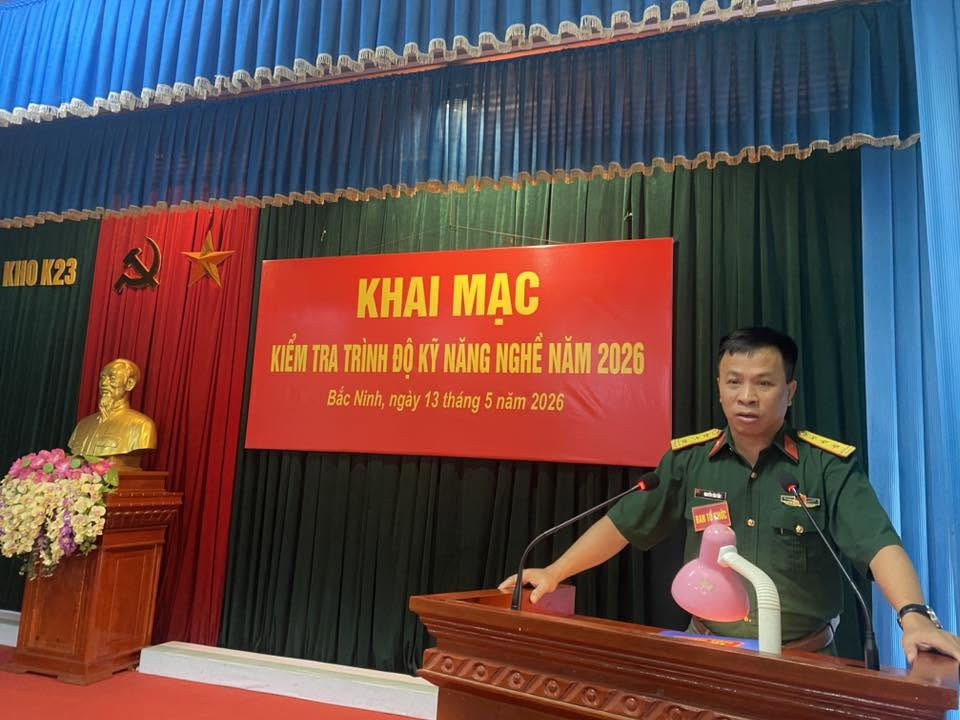
Kiểm tra trình độ kỹ năng nghề là một trong những nội dung quan trọng của công tác huấn luyện thường xuyên. Thông qua kiểm tra nhằm đánh giá đúng trình độ chuyên môn, năng lực công tác của đội ngũ nhân viên chuyên môn kỹ thuật và công tác huấn luyện, bồi dưỡng kiểm tra trình độ kỹ năng nghề ở đơn vị.
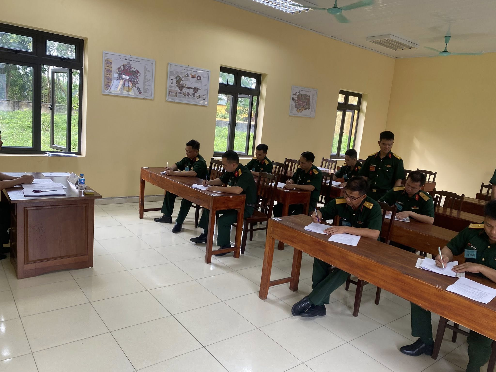
Trong những năm qua, công tác kiểm tra trình độ kỹ năng nghề luôn được Đảng uỷ, chỉ huy Kho và các cơ quan, đơn vị thường xuyên quan tâm lãnh đạo, chỉ đạo và tổ chức thực hiện có hiệu quả, đi vào nền nếp. Tổ chức kiểm tra trình độ kỹ năng nghề hằng năm nhằm đánh giá kết quả công tác huấn luyện, đồng thời giáo dục cho đội ngũ nhân viên chuyên môn nêu cao ý thức, trách nhiệm, tích cực học tập, rèn luyện nâng cao trình độ tay nghề, đáp ứng yêu cầu, nhiệm vụ theo chức trách được giao.
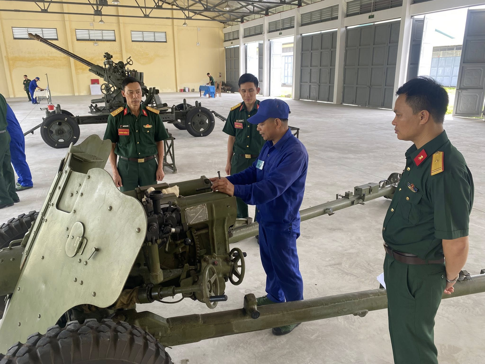
Phát biểu khai mạc, đồng chí Thượng tá Nguyễn Văn Tấn, Chủ tịch Hội đồng Kiểm tra trình độ kỹ năng nghề năm 2026 đã đánh giá công tác huấn luyện, bồi dưỡng chuyên môn nghiệp vụ của các cơ quan, đơn vị trong Kho đồng thời quán triệt mục đích, yêu cầu của kiểm tra; giao nhiệm vụ cho Ban giám khảo, Tiểu ban giám khảo và các đồng chí nhân viên chuyên môn kỹ thuật tham gia kiểm tra. Tham dự kiểm tra năm nay có 9 đồng chí nhân viên kỹ thuật được triệu tập với 02 ngành nghề (Ngành Quân khí và Ngành Xe máy); các thí sinh kiểm tra trên 02 nội dung (lý thuyết tại Phòng huấn luyện và kiểm tra thực hành tại các Tiểu ban). Kỳ kiểm tra đã diễn ra nghiêm túc, chấp hành nghiêm Quy chế và các quy định của Hội đồng Kiểm tra. Công tác chuẩn bị và tổ chức kiểm tra của cơ quan, đơn vị chu đáo, tỉ mỉ. Các đồng chí nhân viên kỹ thuật tham gia dự kiểm tra đều tích cực ôn luyện, phát huy hết tinh thần trách nhiệm và khả năng của bản thân phấn đấu đạt kết quả cao nhất./.
Chiều ngày 13/5/2026, Kho K23 tổ chức quán triệt phong trào thi đua “Đổi mới sáng tạo, phát triển khoa học, công nghệ, chuyển đổi số, chuyển đổi xanh”. Tại buổi quán triệt, cán bộ, nhân viên các bộ phận đã tiến hành ký cam kết thi đua với quyết tâm phát huy tinh thần đoàn kết, chủ động, sáng tạo, tích cực nghiên cứu, ứng dụng công nghệ mới vào công tác quản lý, bảo dưỡng, sửa chữ, niêm cất VKTBKT. Đồng thời xây dựng môi trường làm việc chính quy, hiện đại, an toàn và thân thiện với môi trường. Hưởng ứng thực hiện phong trào thi đua nhằm nâng cao nhận thức, trách nhiệm của cán bộ, nhân viên trong toàn Kho đẩy mạnh ứng dụng khoa học công nghệ, phát huy sáng kiến cải tiến kỹ thuật, góp phần nâng cao chất lượng thực hiện nhiệm vụ.
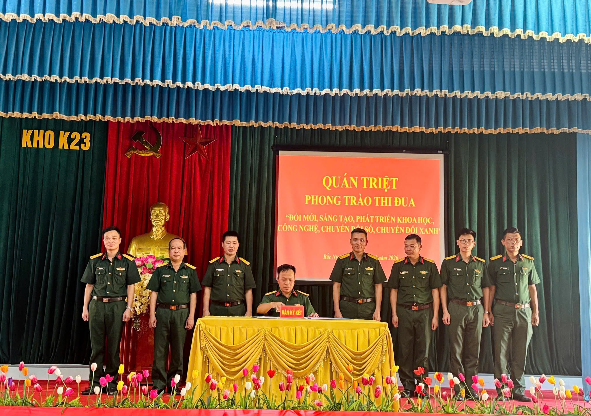
Phong trào thi đua “Đổi mới sáng tạo, phát triển khoa học, công nghệ, chuyển đổi số, chuyển đổi xanh” đã kịp thời cổ vũ, tạo khí thế thi đua sôi nổi cho cán bộ, nhân viên Kho K23 tiếp tục phát huy thành tích đã đạt được, phấn đấu hoàn thành tốt mọi nhiệm vụ được giao, góp phần xây dựng đơn vị vững mạnh toàn diện “mẫu mực, tiêu biểu” năm 2026 và những năm tiếp theo./.
Chiều ngày 19/5/2026, Kho K23, Cục Hậu cần - Kỹ thuật phối hợp với Trường Mầm Non Xã Hoàng Vân tổ chức chương trình ký kết thực hiện mô hình “Đỡ đầu học sinh có hoàn cảnh đặc biệt khó khăn” giữa đơn vị với nhà trường.
Dự và chỉ đạo chương trình có đồng chí 4// Vũ Đức Cấp PCNCT/Cục HCKT, đồng chí 3// Nguyễn Văn Tấn chủ nhiệm Kho và đại diện BGH nhà trường, đại diện hội phụ huynh cha mẹ học sinh trường Mầm Non được nhận đỡ đầu.
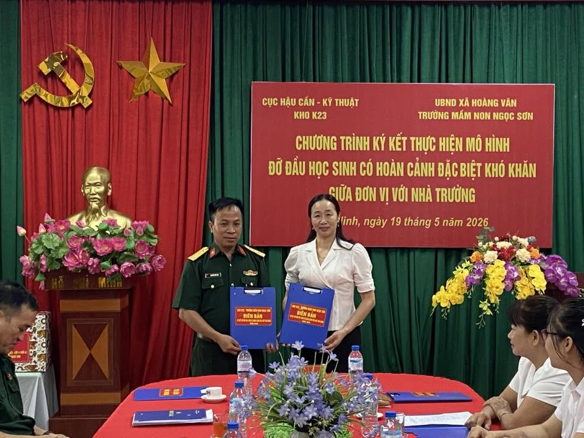
Tại chương trình, các đại biểu đã tiến hành ký kết phối hợp thực hiện mô hình với mục tiêu chung tay chăm lo, hỗ trợ, tạo điều kiện giúp em học sinh có hoàn cảnh khó khăn vươn lên trong học tập và cuộc sống. Đây là hoạt động có ý nghĩa thiết thực, thể hiện tinh thần trách nhiệm, tình cảm và sự quan tâm của cán bộ, nhân viên, Kho K23 đối với công tác an sinh xã hội, góp phần lan tỏa hình ảnh tốt đẹp của “Bộ đội Cụ Hồ” trong thời kỳ mới.
Phát biểu tại chương trình, lãnh đạo đơn vị nhấn mạnh việc triển khai mô hình không chỉ mang ý nghĩa hỗ trợ vật chất mà còn là nguồn động viên tinh thần, tiếp thêm nghị lực để em học sinh vượt qua khó khăn, phấn đấu trở thành con ngoan, trò giỏi, công dân có ích cho xã hội.
Chương trình diễn ra trong không khí trang trọng, ấm áp, thể hiện sự phối hợp chặt chẽ giữa đơn vị, nhà trường, địa phương và gia đình trong công tác chăm lo, giáo dục thế hệ trẻ./.
Hội thi cán bộ Đoàn giỏi và tuyên truyền viên trẻ Cục Hậu cần- Kỹ thuật năm 2026 là đợt sinh hoạt chính trị sâu rộng, góp phần bồi dưỡng bản lĩnh, kỹ năng, nghiệp vụ công tác thanh niên cho đội ngũ cán bộ Đoàn ở các cơ quan, đơn vị. Thông qua hội thi, tinh thần xung kích, sáng tạo, trách nhiệm của cán bộ, đoàn viên tiếp tục được khơi dậy, lan tỏa mạnh mẽ trong thực hiện nhiệm vụ.
Chiều ngày 19/5/2026, Kho K23 tham gia Hội thi cán bộ Đoàn giỏi và tuyên truyền viên trẻ cấp Cục; dự và trực tiếp chấm thi tại Kho K23 có đồng chí Đại tá Vũ Đức Cấp- Phó chủ nhiệm Chính trị/ Cục; cùng đoàn công tác của Phòng chính trị.
Tham gia Hội thi cán bộ Đoàn giỏi và tuyên truyền viên trẻ cấp Cục năm 2026, đội thi của Kho K23 được chuẩn bị, luyện tập kỹ lưỡng, nội dung tuyên truyền được sân khấu hoá, xây dựng phong phú, thiết thực, bám sát thực tiễn công tác Đoàn và phong trào thanh niên tại đơn vị. Hội thi không chỉ tập trung nâng cao kỹ năng, nghiệp vụ công tác Đoàn, mà còn kết hợp chặt chẽ với công tác tuyên truyền, góp phần nâng cao nhận thức chính trị, bản lĩnh, trách nhiệm và khả năng tuyên truyền, vận động của đội ngũ cán bộ Đoàn, đoàn viên, thanh niên. Tham dự hội thi, đội thi của Kho K23 đã chủ động nghiên cứu, đổi mới hình thức tổ chức, đẩy mạnh ứng dụng công nghệ thông tin, trong các nội dung tuyên truyền; xây dựng các mô hình, hình thức tuyên truyền trực quan, sinh động, phù hợp với đặc điểm, nhiệm vụ của đơn vị và đối tượng tuyên truyền, qua đó đã góp phần nâng cao chất lượng, hiệu quả của hội thi.
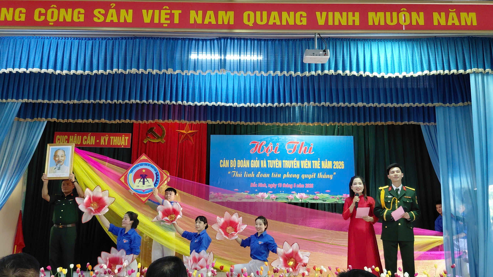
Điểm nhấn của hội thi là sự kết hợp hài hoà giữa phần truyên truyền, sân khấu hoá với các vũ đạo và với sự tham gia của các đơn vị kết nghĩa trên địa bàn đơn vị đóng quân... Qua sự chuẩn bị công phu, luyện tập chu đáo, đội thi đã thể hiện sinh động, giàu tính tuyên truyền, bám sát thực tiễn công tác Đoàn và phong trào thanh niên ở đơn vị.
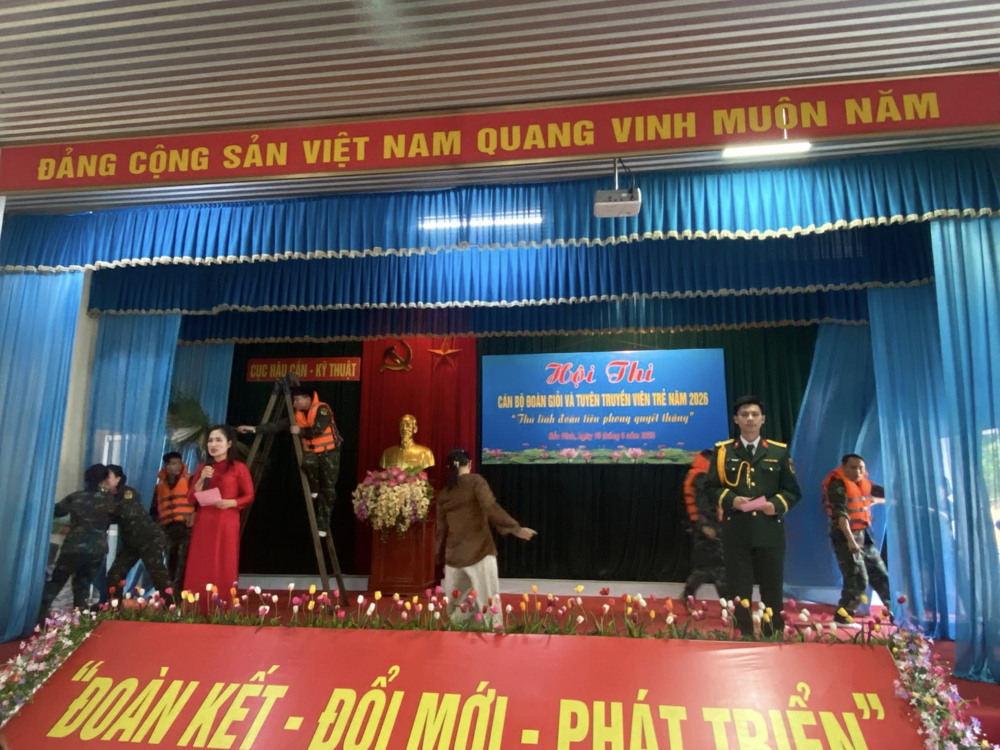
Kết thúc nội dung thi, đội thi Kho K23 được đoàn chấm thi của Cục Hậu cần- Kỹ thuật đánh gia cao; Hội thi cán bộ Đoàn giỏi và tuyên truyền viên trẻ năm 2026 tạo điều kiện để cán bộ, đoàn viên, thanh niên giao lưu, học hỏi kinh nghiệm, rèn luyện kỹ năng tuyên truyền, tổ chức hoạt động và xử lý tình huống thực tiễn./.
Thực hiện Hướng dẫn số 1390/HD-TN, ngày 19/5/2026 của Cục Chính trị Quân khu về Tổ chức Chiến dịch “Thanh niên tình nguyện Hè” năm 2026. Sáng ngày 02/6/2026, Đoàn cơ sở Kho K23, Cục Hậu cần-Kỹ thuật tổ chức Lễ ra quân phát động thực hiện Chiến dịch “Thanh niên tình nguyện Hè” năm 2026.
Dự và chỉ đạo có Đồng chí Thượng tá Đoàn Ngọc Tú, Bí thư Đảng uỷ, Chính trị viên Kho; cùng dự còn có các đồng chí trong Đảng uỷ Kho và chỉ huy các cơ quan, đơn vị trong toàn Kho
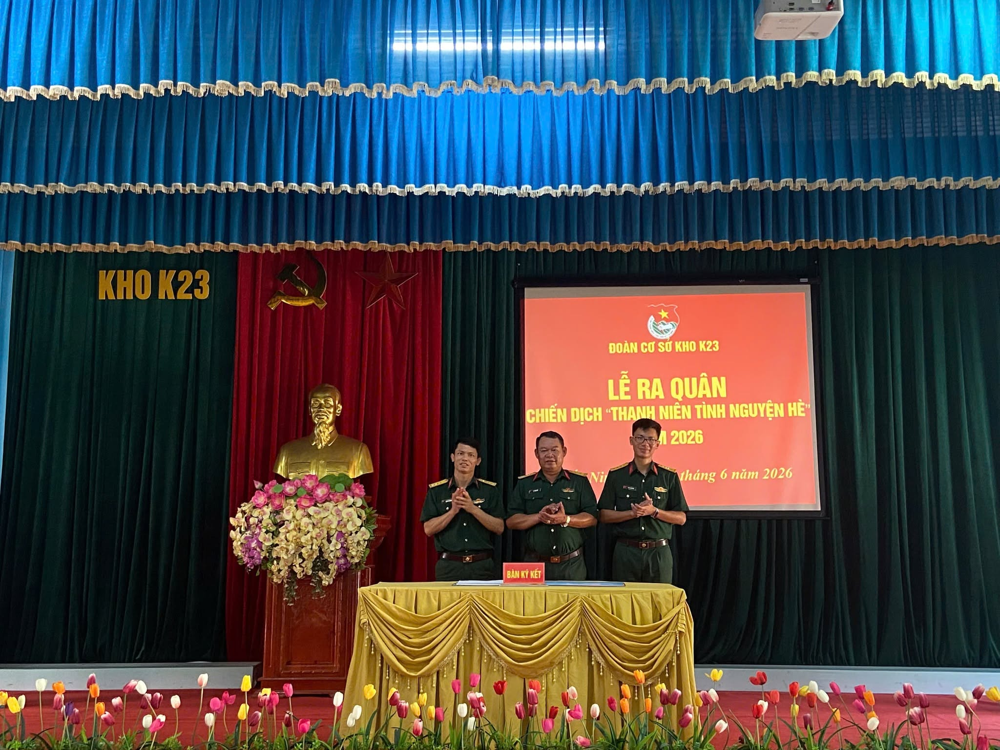
Qua nghe đồng chí Bí thư Đoàn cơ sở Kho quán triệt các nội dung của Chiến dịch và phát biểu chỉ đạo của đồng chí Bí thư Đảng uỷ, Chính trị viên Kho; Ban chấp hành Đoàn cơ sở và cán bộ, đoàn viên thanh niên của các Chi đoàn trực thuộc đã nghiêm túc tiếp thu và phấn khởi tham gia thực hiện. Với tinh thần xung kích, nhiệt huyết của tuổi trẻ, chắc chắn rằng sau chiến dịch này cán bộ, đoàn viên thanh niên Kho K23 sẽ tiếp thu được nhiều bài học kinh nghiệm quý giá, tiếp tục khẳng định phẩm chất bộ đội Cụ Hồ trong lòng nhân dân và góp phần không nhỏ trong việc xây dựng đơn vị VMTD “Mẫu mực, tiêu biểu”, luôn sẵn sàng nhận và hoàn thành tốt mọi nhiệm vụ được giao./.
Quy tắc này quy định chuẩn mực hành vi, trách nhiệm và văn hóa ứng xử của các tổ chức, cá nhân trong Quân đội khi tham gia hoạt động trên môi trường số (áp dụng đối với cả việc sử dụng tài khoản cá nhân ngoài giờ làm việc khi có liên quan đến hình ảnh, uy tín Quân đội).
Đối tượng áp dụng
1. Sĩ quan, quân nhân chuyên nghiệp, hạ sĩ quan, binh sĩ.
2. Công nhân, viên chức, công chức quốc phòng.
3. Quân nhân dự bị trong thời gian tập trung huấn luyện, diễn tập, kiểm tra sẵn sàng động viên, sẵn sàng chiến đấu hoặc thực hiện các nhiệm vụ liên quan đến nhiệm vụ quân sự, quốc phòng.
4. Dân quân, tự vệ phối thuộc với Quân đội trong chiến đấu, phục vụ chiến đấu, đang đào tạo tại các cơ sở đào tạo trong Quân đội, trong thời gian tập trung huấn luyện hoặc thực hiện các nhiệm vụ liên quan đến nhiệm vụ quân sự, quốc phòng theo quy định của pháp luật.
5. Học viên đào tạo dự bị tại các cơ sở đào tạo trong Quân đội. Học sinh các trường thiếu sinh quân. Công dân được trưng tập vào phục vụ trong Quân đội.
6. Các tổ chức, cơ quan, đơn vị do Bộ trưởng Bộ Quốc phòng trực tiếp quản lý có liên quan đến quản lý, sử dụng môi trường số.
NỘI DUNG QUY TẮC ỨNG XỬ
* Quy tắc ứng xử chung
1. Tuân thủ các quy định của pháp luật Việt Nam, kỷ luật Quân đội, tôn trọng quyền và lợi ích hợp pháp của mọi tổ chức, cá nhân.
2. Ứng xử văn minh, lịch sự; tôn trọng, bảo vệ, giữ gìn, lan tỏa bản sắc văn hóa và giá trị văn hóa truyền thống tốt đẹp của dân tộc và Quân đội.
3. Chịu trách nhiệm về hành vi ứng xử trên môi trường số; phối hợp với cơ quan chức năng để xử lý hành vi, nội dung thông tin vi phạm pháp luật, ứng xử thiếu văn hóa, phản cảm.
* Quy tắc nêu gương
1. Mọi đối tượng được quy định tại mục “Đối tượng áp dụng” ở trên phải gương mẫu trong ứng xử có văn hóa trên môi trường số.
2. Chủ động lan tỏa thông tin tích cực; đăng tải, chia sẻ thông tin có nguồn gốc chính thống, tin cậy (Thông tư số 81/2025/TT-BQP ngày 26-7-2025 của Bộ Quốc phòng quy định quản lý, cung cấp, sử dụng ứng dụng, dịch vụ và thông tin trên mạng Internet trong Bộ Quốc phòng).
3. Kịp thời biểu dương, khen thưởng cá nhân, tổ chức có thành tích trong thực hiện Quy tắc ứng xử văn hóa trên môi trường số trong Quân đội.
* Quy tắc bảo vệ bí mật quân sự
1. Không đăng tải hình ảnh, video, thông tin về các nội dung được quy định tại Quyết định số 35/QĐ-TTg ngày 11-3-2025 của Thủ tướng Chính phủ Ban hành danh mục bí mật nhà nước trong lĩnh vực quốc phòng.
2. Không sử dụng các tính năng định vị, gắn thẻ địa điểm (check in) hoặc thiết bị thông minh có khả năng thu thập dữ liệu vị trí trong khu vực quân sự khi chưa được phép.
3. Không sử dụng thiết bị cá nhân ghi âm, ghi hình, lưu trữ tài liệu mật trái quy định.
4. Không tự ý đăng tải, chia sẻ hình ảnh, thông tin về hoạt động của đơn vị khi chưa được cấp có thẩm quyền cho phép.
5. Không đăng tải, chia sẻ những thông tin trên môi trường số khi chưa có sự thẩm định, kết luận của cơ quan chức năng.
6. Không đăng tải thông tin được tổ chức xác định có độ mật, tối mật, tuyệt mật.
* Quy tắc ứng xử trong giáo dục, đào tạo, huấn luyện, sẵn sàng chiến đấu
1. Không sử dụng mạng xã hội trong giờ làm việc, huấn luyện, trực sẵn sàng chiến đấu (trừ trường hợp phục vụ nhiệm vụ chuyên môn được cấp có thẩm quyền cho phép).
2. Không phát trực tiếp (livestream) hoạt động huấn luyện chiến đấu; đối với các hoạt động khác phải được cơ quan có thẩm quyền cho phép.
3. Không tự ý chia sẻ thông tin liên quan nhiệm vụ đang thực hiện.
* Quy tắc ứng xử trong quan hệ quân - dân
1. Thể hiện thái độ chuẩn mực, tôn trọng, ứng xử nghĩa tình với nhân dân. Thực hiện nghiêm: Lời thề thứ 9 trong “10 lời thề danh dự của quân nhân trong Quân đội nhân dân Việt Nam” và 12 điều kỷ luật khi tiếp xúc với nhân dân của quân nhân.
2. Lan tỏa hình ảnh tốt đẹp của Quân đội nhân dân Việt Nam.
3. Không bình luận tiêu cực, quá khích, kích động, gây xung đột trên môi trường số.
4. Khi tham gia các ứng dụng hoặc diễn đàn có nội dung không phù hợp để đấu tranh với những luận điệu xuyên tạc, sai sự thật, các đối tượng quy định tại mục “Đối tượng áp dụng” ở trên không được sử dụng hình ảnh mặc quân phục, đồng phục, phù hiệu, cấp hiệu làm ảnh đại diện (avatar) hoặc đăng tải hình ảnh cá nhân gắn với các biểu tượng Quân đội nhân dân Việt Nam.
5. Có trách nhiệm cao trong việc “xác thực thông tin” trước khi chia sẻ, phản hồi trên môi trường số; bảo vệ quyền riêng tư của tổ chức, cá nhân khác, không chia sẻ, lan truyền các thông tin, hình ảnh của tổ chức, cá nhân khi chưa được sự đồng ý của chủ thể.
* Quy tắc ứng xử trong công tác đối ngoại quốc phòng
1. Không tự ý phát ngôn về vấn đề đối ngoại, quốc phòng.
2. Không đăng tải thông tin chưa được phép về hoạt động đối ngoại.
3. Tôn trọng pháp luật và thông lệ quốc tế. Sử dụng ngôn từ chuẩn mực, phù hợp văn hoá Việt Nam và tôn trọng văn hóa, phong tục của các quốc gia khác.
* Hành vi ứng xử khuyến khích
1. Chấp hành nghiêm Luật chuyển đổi số, số 148/2025/QH15; Luật An ninh mạng số 116/2025/QH15.
2. Chia sẻ thông tin chính thống, tích cực.
3. Đấu tranh phản bác thông tin sai trái, thù địch.
4. Báo cáo, cung cấp thông tin xấu độc cho cơ quan chức năng.
* Hành vi ứng xử bị nghiêm cấm
1. Đăng tải thông tin thiếu kiểm chứng, sai sự thật, xuyên tạc, bịa đặt.
2. Tiết lộ bí mật nhà nước, bí mật quân sự; thông tin cá nhân liên quan đến cơ quan, đơn vị.
3. Xúc phạm danh dự, uy tín tổ chức, cá nhân.
4. Tham gia, cổ súy nội dung chống phá Đảng, Nhà nước, Quân đội. Cố ý truy cập vào các trang thông tin điện tử liên quan đến chống phá Đảng, Nhà nước, Quân đội (khi không được giao nhiệm vụ); truy cập, xem, phát tán, bình luận, chia sẻ các nội dung thông tin mật, nội dung tiêu cực, phản cảm (khiêu dâm, bạo lực...) thông tin xấu độc trên internet, mạng xã hội.
5. Tham gia hội nhóm, diễn đàn có nội dung xấu độc; Livestream, đăng hình ảnh phản cảm, trái thuần phong mỹ tục.
6. Lợi dụng môi trường số để thể hiện quan điểm cá nhân trái quy định hay trục lợi vì mục đích cá nhân.
QUY TẮC ỨNG XỬ ĐỐI VỚI CÁC ĐƠN VỊ ĐẶC THÙ
Quy tắc ứng xử đối với đơn vị cung cấp và quản lý dịch vụ mạng xã hội, nền tảng số
1. Công bố công khai, rõ ràng các điều khoản sử dụng dịch vụ, bao gồm tất cả các quyền và nghĩa vụ của nhà cung cấp dịch vụ và người sử dụng, trong đó có cả phương thức phân phối nội dung hoặc quảng cáo tới khách hàng, các hình thức xử lý tài khoản người sử dụng vi phạm; cho phép người sử dụng lựa chọn phạm vi thông tin đồng ý cung cấp (trừ thông tin bắt buộc cung cấp theo quy định của pháp luật và Quân đội).
2. Cung cấp cơ chế, công cụ báo cáo vi phạm rõ ràng, dễ sử dụng cho người dùng; có cơ chế phản hồi sau khi tiếp nhận báo cáo vi phạm hoặc khiếu nại từ người sử dụng theo quy định của pháp luật về bảo vệ người tiêu dùng.
3. Có trách nhiệm phân loại và hiển thị cảnh báo các nội dung không phù hợp với đối tượng người dùng trong Quân đội và triển khai giải pháp bảo đảm an ninh, an toàn và bảo vệ dữ liệu cá nhân trên môi trường số theo các luật định hiện hành.
4. Phối hợp với cơ quan chức năng truyền thông chính sách đến người sử dụng; khuyến khích tham gia chiến dịch nâng cao nhận thức về văn hóa trên môi trường số.
5. Chủ động rà soát, phát hiện và ngăn chặn các hành vi lừa đảo, phát tán tin giả hoặc quảng cáo vi phạm pháp luật; khuyến khích sử dụng công nghệ (AI, phân tích dữ liệu) để phát hiện, ngăn chặn các nội dung vi phạm pháp luật; phối hợp với cơ quan chức năng xử lý, ngăn chặn và loại bỏ các nội dung vi phạm pháp luật.
Quy tắc ứng xử đối với đơn vị báo chí, phát thanh, truyền hình; đơn vị nghệ thuật biểu diễn
1. Đối với cơ quan báo chí, phát thanh, truyền hình
a) Cung cấp thông tin chính xác, kịp thời; chủ động, kịp thời định hướng dư luận, củng cố niềm tin, tạo sự đồng thuận; lan tỏa giá trị tích cực trong đời sống xã hội và truyền thống tốt đẹp của dân tộc, Quân đội; kịp thời phê phán, lên án các hành vi phản văn hóa, vi phạm pháp luật.
b) Chủ động phát hiện, xác minh thông tin chưa được kiểm chứng, không rõ nguồn gốc; đấu tranh, phản bác, cảnh báo đối với tin giả, thông tin xấu độc, hành vi lừa đảo và vi phạm pháp luật trên môi trường số.
c) Không hợp tác, đăng tải, quảng bá đối với cá nhân, tổ chức vi phạm pháp luật, vi phạm chuẩn mực đạo đức xã hội; chấp hành nghiêm các khuyến nghị, yêu cầu của cơ quan quản lý nhà nước có thẩm quyền.
2. Đối với đơn vị hoạt động văn hóa, nghệ thuật
a) Kiểm soát toàn diện nội dung truyền thông, quảng cáo và các hoạt động biểu diễn nghệ thuật trên môi trường số.
b) Không hợp tác với cá nhân, tổ chức có hành vi vi phạm các quy định của pháp luật hoặc khi có khuyến nghị của cơ quan quản lý nhà nước.
c) Phát huy vai trò của người có sức ảnh hưởng (người nổi tiếng) tuyên truyền và lan tỏa hình ảnh cao đẹp Bộ đội Cụ Hồ trong thời kỳ mới
Chiều 11-6, tại Quân khu 1, Tổng cục Chính trị Quân đội nhân dân Việt Nam tổ chức bế mạc Hội thi Báo cáo viên giỏi toàn quân năm 2026 khu vực phía Bắc. Thượng tướng Trương Thiên Tô, Ủy viên Trung ương Đảng, Ủy viên Quân ủy Trung ương, Phó Chủ nhiệm Tổng cục Chính trị Quân đội nhân dân (QĐND) Việt Nam dự và phát biểu bế mạc hội thi.
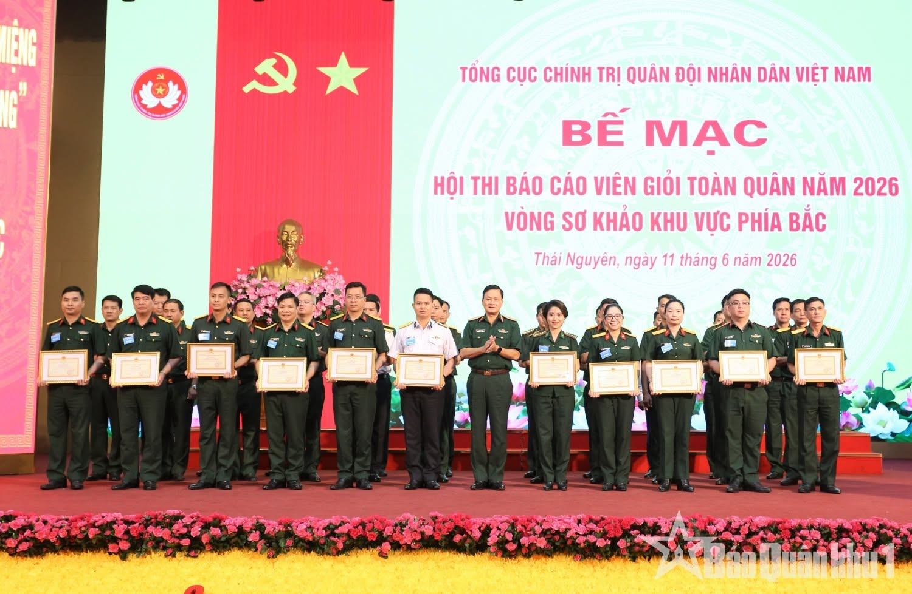
Sau hơn 3 ngày tranh tài sôi nổi (từ ngày 9 đến ngày 11-6), các thí sinh hoàn thành 3 nội dung thi gồm: Kiến thức, soạn đề cương tuyên truyền và thuyết trình. Theo đánh giá của Ban tổ chức, hội thi năm nay cho thấy bước trưởng thành rõ nét của đội ngũ báo cáo viên toàn quân cả về bản lĩnh chính trị, trình độ lý luận, kiến thức thực tiễn và kỹ năng tuyên truyền. Nhiều báo cáo viên đạt điểm tuyệt đối ở phần thi kiến thức, thể hiện sự đầu tư nghiêm túc trong nghiên cứu các nghị quyết, chỉ thị của Đảng, Quân ủy Trung ương và nghiệp vụ công tác tuyên truyền miệng.
Bế mạc Hội thi, 100% báo cáo viên đạt loại khá, giỏi; Ban tổ chức trao bằng khen tặng 3 đồng chí đạt giải nhất, 6 đồng chí đạt giải nhì, 19 đồng chí đạt giải ba, 2 tập thể và 3 cá nhân có thành tích xuất sắc trong tham mưu tổ chức và bảo đảm phục vụ hội thi; trao giấy khen tặng 32 đồng chí đạt giải khuyến khích; trao chứng nhận “Báo cáo viên giỏi cấp toàn quân” đối với 81 đồng chí.
Trong đó, Đại tá Hoàng Quốc Tuấn, Phó Chính ủy Sư đoàn 3 đạt giải Ba; Trung tá Hoàng Trọng Trang, Chính ủy Trung đoàn 141 (Sư đoàn 3) đạt giải Khuyến khích.
Thành công của Hội thi Báo cáo viên giỏi toàn quân năm 2026 vòng sơ khảo khu vực phía Bắc tiếp tục khẳng định vai trò quan trọng của công tác tuyên truyền miệng và đội ngũ báo cáo viên trong việc đưa nghị quyết của Đảng vào cuộc sống; góp phần củng cố niềm tin, thống nhất ý chí và hành động, xây dựng Quân đội nhân dân Việt Nam cách mạng, chính quy, tinh nhuệ, hiện đại, đáp ứng yêu cầu nhiệm vụ bảo vệ Tổ quốc trong tình hình mới.
Nhận thức sâu sắc tăng gia sản xuất là một nội dung quan trọng trong công tác hậu cần nhằm bảo đảm tốt đời sống cho bộ đội, ngay từ đầu năm 2026 Kho K23 đã tập trung nhiều biện pháp nhằm đẩy mạnh thực hiện có hiệu quả công tác tăng gia sản xuất.
Năm 2026, có thể nói là một năm Kho K23 tham gia thực hiện nhiều nhiệm vụ; quân số phân tán do đi công tác trong thời gian dài, lực lượng trực tiếp tham gia tăng gia, sản xuất có nhiều biến động, khiến công tác tăng gia sản xuất gặp nhiều khó khăn. Với sự nhận thức sâu sắc về tầm quan trọng của công tác tăng gia sản xuất đối với bảo đảm đời sống bộ đội, ngay từ đầu năm đã tập trung nhiều biện pháp nhằm phục hồi và đẩy nhanh tiến độ thực hiện công tác tăng gia sản xuất.
Dẫn chúng tôi đi thăm khu tăng gia sản xuất của đơn vị, dừng chân tại diện tích trồng rau tập trung, Trung tá Nguyễn Văn Ánh, Chủ nhiệm Hậu cần Kho K23 chia sẻ: “Là đơn vị kỹ thuật, đóng quân trên vùng đất không bằng phẳng, chất đất cằn cỗi, diện tích đất tăng ra của đơn vị phân tán nhiều khu vực. Để duy trì thực hiện hiệu quả các hoạt động tăng gia sản xuất đơn vị đã phải tổ chức thành các tổ, đội tăng gia, sản xuất đảm nhiệm các khu vực khác nhau. Tuy nhiên, đơn vị thực hiện đan xen nhiều nhiệm vụ, quân số phân tán do tăng cường các đơn vị trong Cục và thực hiện các nhiệm vụ đột xuất khác.. khiến công tác tăng gia sản xuất của đơn vị gặp nhiều khó khăn. Trong khi đó như cầu bảo đảm cho cán bộ, nhân viên tham gia thực hiện nhiệm vụ tăng mạnh. Những yếu tố đó khiến công tác tăng gia, sản xuất của đơn vị luôn đồi hỏi phải được quan tâm chặt chẽ. Để đáp ứng tình hình thực tiễn, ngay từ đầu năm, đơn vị đã và đang tích cực chủ động cải tạo đất, xuống giống cây trồng; đối với hệ thống ao nuôi cá, đơn vị bổ sung con giống chất lượng cao để nuôi. Đối với hệ thống chuồng trại đã tổ chức tổng dọn vệ sinh, phun thuốc phòng dịch và tái đàn gia súc, gia cầm.... Đơn vị phấn đấu bảo đảm đủ và vượt chỉ tiêu tăng gia, sản xuất năm 2026”. Được biết, Kho K23 là đơn vị kỹ thuật, với nhiệm vụ chính trị là bảo quản, bảo dưỡng, sửa chữa, niêm cất, cấp phát VKTBKT cho các đơn vị trong Lực lượng vũ trang Quân khu theo mệnh lệnh… những năm qua, công tác tăng gia sản xuất luôn được đơn vị chú trọng thực hiện tốt. Từ công tác tăng gia sản xuất, hằng năm đã giúp Kho K23 đã tự chủ đầy đủ rau, củ, quả, thịt gia súc, gia cầm, thịt cá các loại bảo đảm nhu cầu ăn cho cán bộ, nhân viên trong đơn vị.
Hiện tại, Kho K23 duy trì đàn gia cầm, thủy cầm hơn 4.000 con; đàn lợn gần 500 con gồm (Lợn rừng, lợn mán, lợn siêu nạc…). Ngoài các vật nuôi chủ đạo, Kho K23 đã có đột phát trong trong phát triển các loại vật nuôi có giá trị thương phẩm và kinh tế cao như (Hươu sao, dê, bồ câu, thỏ,…).
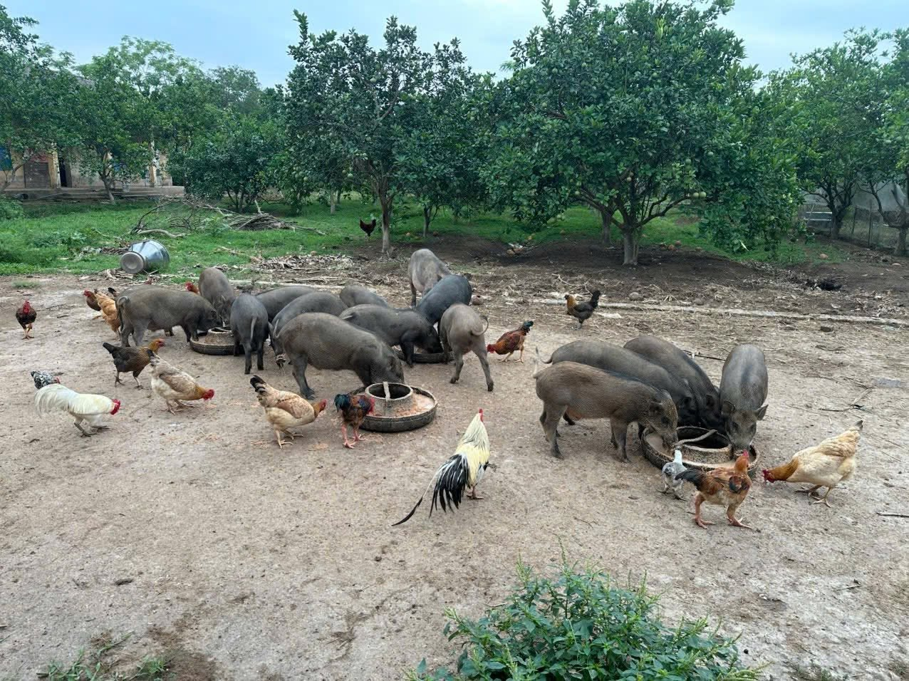 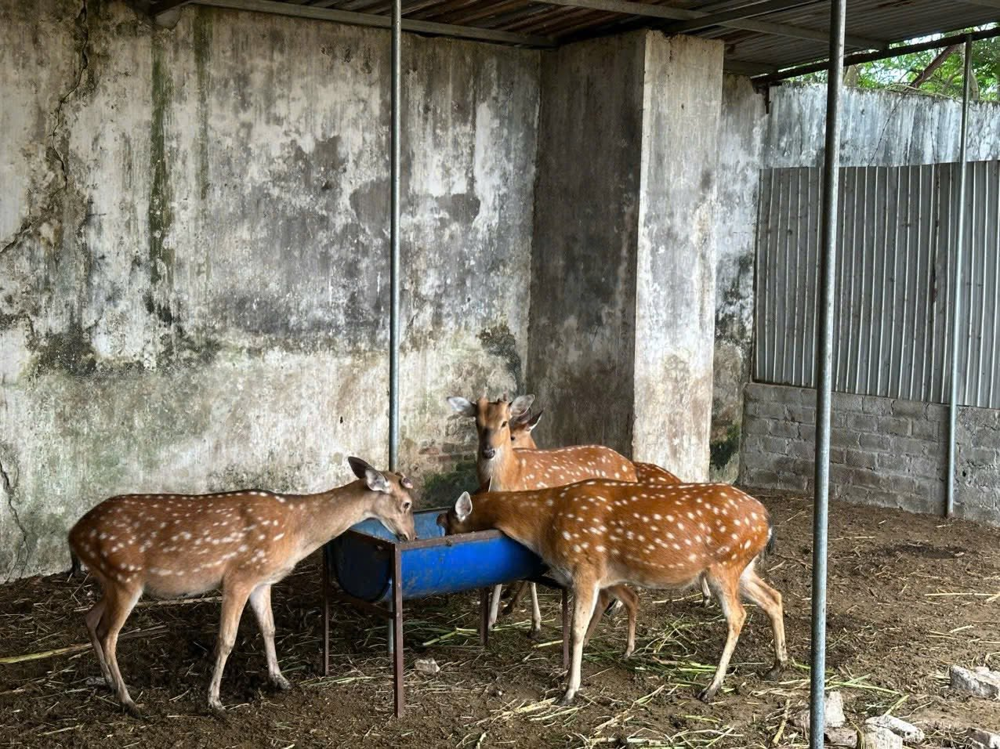
Để có kết quả trên, Kho K23 thường xuyên quán triệt sâu sắc văn bản lãnh đạo, chỉ đạo các cấp, nhất là Chỉ lệnh Công tác Hậu cần của Tư lệnh Quân khu, kế hoạch công tác Hậu cần của Cục Hậu cần- Kỹ thuật... Trên cơ sở đó, Đảng ủy Kho K23 đã ra Nghị quyết lãnh đạo toàn diện các mặt công tác, trong đó quan tâm lãnh đạo, đổi mới công tác hậu cần, nhất là nội dung tăng gia sản xuất, chăm lo đời sống, sinh hoạt, sức khỏe của bộ đội.
Cấp ủy, chỉ huy các cấp đã quán triệt, cụ thể hóa vào chỉ tiêu nghị quyết lãnh đạo cấp mình; xây dựng kế hoạch, thống nhất chủ trương, biện pháp tổ chức thực hiện, trong đó chú trọng nội dung tổ chức tốt các hoạt động tăng gia sản xuất. Kho K23 thường xuyên tuyên truyền về vai trò quan trọng của việc thực hiện tốt công tác tăng gia, gắn với việc tổ chức thực hiện tốt Phong trào thi đua “Ngành Hậu cần quân đội làm theo lời Bác Hồ dạy” đến toàn thể cán bộ, nhân viên. Qua đó, tạo chuyển biến tích cực từ nhận thức đến hành động của bộ đội trong công tác bảo đảm hậu cần nói chung, công tác tăng gia sản xuất nói riêng.
Mặt khác, bằng trí tuệ tập thể, công sức lao động của cán bộ, nhân viên, Kho K23 đã quy hoạch, xây dựng hệ thống tăng gia rau xanh tại chỗ, hệ thống chăn nuôi cơ bản, bảo đảm phù hợp với quy hoạch chung và không ảnh hưởng đến môi trường học tập, sinh hoạt khác của cán bộ, nhân viên.
Hệ thống chuồng gia súc, gia cầm được xây dựng khép kín; hệ thống vườn, giàn quy hoạch tập trung ở các nơi xa hoạt động huấn luyện; hệ thống vườn được xây dựng có đường nội bộ và lắp đặt hệ thống tưới nước tự động, bảo đảm tiết kiệm nước và giảm công sức của bộ đội, hệ thống giàn được thiết kế kiên cố vững chắc, sạch đẹp.
Tin rằng thời gian tới, với sự nỗ lực, đoàn kết của cán bộ, nhân viên, công tác tăng gia, sản xuất của Kho K23 sẽ tiếp tục đạt được nhiều kết quả nổi bật hơn. Qua đó, giúp đơn vị từng bước nâng cao chất lượng bữa ăn bộ đội, bảo đảm quân số khỏe tham gia học tập, làm việc; cán bộ, nhân viên an tâm tư tưởng, sẵn sàng nhận và hoàn thành tốt nhiệm vụ, xây dựng đơn vị vững mạnh toàn diện “Mẫu mực tiêu biểu”.